Evidence SARS-CoV-2 Emerged From a Biological Laboratory in Wuhan, China
Published April 16, 2020.
1 Abstract
The goal of this document is to examine evidence that may prove that (1) the SARS-CoV-2 virus was present at a biolaboratory in Wuhan, China, and (2) the SARS-CoV-2 virus was introduced into the greater Wuhan population by an infected lab worker or animal. These claims from this point on will be referred to as Claim 1 and Claim 2.
This document does not attempt to provide a concrete conclusion on whether either claim is factually true. Rather, it examines the probability that each claim is true to allow the reader to make his or her own conclusions. While either claim cannot be irrevocably proven true, an attempt has been made to ensure the evidence used to support these claims is as factual as possible.
Furthermore, this document does not attempt to investigate claims that SARS-CoV-2 is a "man-made bioweapon" or whether its release was intentional. See A Note on Biowarfare and "HIV Inserts".
If you would like to see a summarized version of every claim in this document, please see the Conclusion.
Please download and share this document: archive.zip
2 Authors
We are an anonymous group of researchers. We are not affiliated with any company, nation state, or organization. We disavow all racism and violent attacks, including those which are aimed at Asian or Chinese people, and we will continue to disavow them throughout this paper. We are not doing this because we hate China, but because we love the truth.
An earlier version of this document referred to us as "Project E.P.S.T.E.I.N." (Evidence Plausibly Supporting Theories Explaining Infection Naturality). It was intended be a humorous backronym. After receiving feedback from several readers, we have decided to change our name to "Project E" (Evidence) to avoid negative connotations with conspiracy theories. We maintain that this document is still supported by the best evidence we have been able to locate.
The authors of this document claim no conflicts of interest.
Our public key is also available for download: public.pem
3 Correction Policy
As of the current date, April 16, 2020, the source of SARS-CoV-2 remains unknown.
If the scientific community can provide peer reviewed studies that prove that the SARS-CoV-2 spillover event occured "in the wild," i.e. outside of a lab and with no connection to lab researchers, animals, organisms, or other specimen, we will add an addendum to this document highlighting those results.
Studies proving the virus was not "engineered" do not prove the spillover event occured outside of a laboratory. We are not claiming the virus was engineered. They also do not prove that the spillover event did not involve an animal or organism sourced from one of these labs.
We are only interested in the truth.
4 Contribution Policy
We welcome contributions to this document as new factual evidence emerges from the scientific and Internet community as a whole.
In particular, we are always looking for peer reviewed papers and other documents that address, back up, or disprove the claims in this document. All sources must be acceptable under our Sourcing Policy. To get started, simply searching this document for, "We are looking for contributors."
If you think you have such evidence, please submit a pull request.
5 Sourcing Policy
Prefer academic papers over any other source.
All academic papers must be peer reviewed; if they are not, this must be made clear to the reader.
Prefer news articles from prestigious medical or scientific journals such as Nature, the Lancet, Scientific American, etc. over "mainstream" media.
Prefer "mainstream" media news articles over amateur or unproven articles.
If using information from an "amateur" source, cross-check it with "mainstream" media, scientific journals, or academic papers, and use those sources rather than the original source to prove the claim.
Use multiple sources to prove the same claim.
If a source is not in English, use Google Translate to provide English snippets, and make it clear to the reader that a translation tool was used.
All sources must be dated.
All sources subject to change must be archived via https://archive.is.
6 Purpose
Above all, we believe in finding the truth. We would like to investigate all theories that could explain the emergence of SARS-CoV-2 without predefined assumptions on what can or can not be true.
6.1 If We’re Right
We believe in holding the Chinese government accountable for changes in regulations and policies that can prevent another laboratory accident. In particular, we would like to see a nationally unified movement toward transparency so that the world may rest assured in the belief that China will not hide the next pandemic, natural or otherwise, if it occurs under their jurisdiction. It is vitally important that lab safety is taken seriously in all countries to ensure the survival and continued success of the human race.
We do not believe in holding individual lab technicians or employees accountable unless they have demonstrated criminal negligence. In most accidents, procedures and policies are the culprit, not individual people. Punishing one person will not prevent the next person from making the same mistakes; instituting new rules that prevent such mistakes will.
6.2 If We’re Wrong
If our claims are proven false, the next step is to determine the true origin of the outbreak, assuming the evidence that proved our claims false did not do that already.
We believe in holding every government accountable for changes in regulations and policies that can prevent another natural outbreak. Whether these be new food safety standards, stronger enforcement of wildlife trade, mandatory reporting rules or agricultural inspections, we want to see the root cause of the problem addressed so that it may never occur again. COVID-19, lab accident or otherwise, has unleashed incalculable pain upon our world, and we must ensure the conditions that enabled its emergence are left behind to history.
6.3 Either Way
We condemn racist attacks on Asian Americans and Asians, including Chinese people, around the world. They are all innocent.
A secondary goal of this document is to further spread global awareness of the hazards posed by biolaboratories, in particular gain-of-function studies, and proximal location to urban areas.
The American CDC, for example, is a 15 minute drive away from Atlanta Hartsfield Jackson Airport, the "world’s busiest airport every year since 2000.". It, too, houses BSL-4 labs that do work on Ebola, smallpox, and anthrax viruses. We must ensure our leaders and representatives are aware of these hazards and are continuing to take steps, in every country, to nullify the possibility of an outbreak.
We do not believe in the eradication of critical virus research; we simply ask that due dilligence is applied transparently wherever it is performed.
7 Nomenclature
Throughout this document we may use several uncommon phrases or acronyms. When appropriate, we will define them before using them. We will list some of the most important ones here.
Coronavirus: In this context, the SARS-CoV-2 virus. In the real world, there are hundreds of other coronaviruses.
SARS: Severe Acute Respiratory Syndrome.
SARS-CoV-1: The original SARS virus that struck China in 2003.
MERS-CoV: Middle East Respiratory Syndrome, a variant of SARS that originated in Saudi Arabia in 2012.
SARS-CoV-2: The current coronavirus resulting in the COVID-19 pandemic.
2019-nCoV: The original name for SARS-CoV-2 before being renamed by the World Health Organization.
COVID-19: (CoronaVirus Infectious Disease 2019) The name of the disease that results from a SARS-CoV-2 viral infection. In severe cases, it leads to fatal pneumonia.
Zoonotic virus: A virus that is capable of spreading from an animal to a human.
Patient Zero: the very first person involved in the spillover event that introduces the virus to humanity. At this time, Patient Zero for SARS-CoV-2 is not widely known, if at all.
And finally, the most important definition you must understand:
Spillover Event: A moment in time in which a zoonotic virus "jumps" from an animal host to a human host.
We believe that a spillover event is the most likely explanation for the introduction of SARS-CoV-2 to the human populace. What we will question is whether this spillover event occured at a market in Wuhan, at a biolaboratory in Wuhan, as a result of interacting with a lab animal from one of these biolaboratories, or somewhere else entirely.
8 Claim 1: Was SARS-CoV-2 Present At A Bio-Laboratory in Wuhan, China?
At this time, it is widely believed that Patient Zero was infected in Wuhan, China with SARS-CoV-2. What is not so certain is where exactly in Wuhan Patient Zero was infected, and how he/she was infected. The competing theories are:
From eating wild animals at the Huanan Seafood Market
From doing work at the Wuhan Institute of Virology, which performed gain-of-function research on the original SARS virus
From doing work at the Wuhan Centre for Disease Control, which performed experiments on and housed many bats known for carrying coronaviruses
From somewhere elsewhere entirely; they were not in Wuhan at all
Patient Zero would then go on to spread the infection, likely asymptomatically, to many people before any defensive measures were taken. This would eventually cause the pandemic now known as COVID-19 and resulting worldwide lockdown.
8.1 The Huanan Seafood Market
The seafood market gained prominence after a study in the New England Journal of Medicine referred to it as a possible origin point:
A Novel Coronavirus from Patients with Pneumonia in China, 2019 (January 24, 2020)
Four lower respiratory tract samples, including bronchoalveolar-lavage fluid, were collected from patients with pneumonia of unknown cause who were identified in Wuhan on December 21, 2019, or later and who had been present at the Huanan Seafood Market close to the time of their clinical presentation.
Source: https://www.nejm.org/doi/10.1056/NEJMoa2001017 (archived)
Indeed, as SARS-CoV-2 and the original SARS-CoV-1 are zoonotic viruses (meaning they spread from animals to humans), it is possible someone may have been in close proximity or even eaten an animal containing the virus. This would constitute a spillover event, many of which have occured in the past and resulted in the introduction of new diseases to humanity. So, it is not unprecedented.
However, a later paper from The Lancet reported that many initial patients were not actually exposed to the Huanan Seafood Market in any way:
Clinical features of patients infected with 2019 novel coronavirus in Wuhan, China (January 24, 2020)
27 (66%) patients had direct exposure to Huanan seafood market (figure 1B). Market exposure was similar between the patients with ICU care (nine [69%]) and those with non-ICU care (18 [64%]). The symptom onset date of the first patient identified was Dec 1, 2019. None of his family members developed fever or any respiratory symptoms. No epidemiological link was found between the first patient and later cases. The first fatal case, who had continuous exposure to the market, was admitted to hospital because of a 7-day history of fever, cough, and dyspnoea. 5 days after illness onset, his wife, a 53-year-old woman who had no known history of exposure to the market, also presented with pneumonia and was hospitalised in the isolation ward.
Source: https://www.thelancet.com/journals/lancet/article/PIIS0140-6736(20)30183-5/fulltext (archived)
Because 34% of cases did not have exposure to the market yet were exposed to the virus, it is highly unlikely the market is the origin point of SARS-CoV-2. Indeed, the study confirms "No epidemiological link was found between the first patient and later cases" - meaning that the first patient at the market was not responsible for spreading the virus to other cases.
What is clear is that the spread of the virus began to rise exponentially after it arrived at the Huanan Seafood Market. According to the Wall Street Journal quoting the Chinese Center for Disease Control, the virus was present in "environmental samples" at the market:
Virus Sparks Soul-Searching Over China’s Wild Animal Trade (January 26, 2020)
Health officials took specimens from the site and found evidence of the virus in 33 out of 585 samples, according to the Chinese Center for Disease Control and Prevention, or CCDC. The virus had been found not just in people’s bodies, but on wild-meat stalls, Gao Fu, the CCDC director told Chinese state television on Thursday. “We must thus call on everyone not to eat wild animals,” he said. “It is only a matter of time to find out which is the specific animal.”
Source: https://www.wsj.com/articles/virus-sparks-soul-searching-over-chinas-wild-animal-trade-11580055290 (archived)
While Mr. Fu here seems to believe the virus originated from the market, we know from the Lancet study that it is unlikely. So, if SARS-CoV-2 did not originate at the market itself, where could it have come from?
8.2 Suspected Laboratories
The first calls to examine the laboratories began when it emerged that the Wuhan Institute of Virology, China’s only BSL-4 bio-laboratory, was only 8.6 miles away from the seafood market. Additionally, the Wuhan Centre for Disease Prevention & Control is located a mere 2.6 miles away. We can easily confirm this with Google Maps:
Directions from Huanan Seafood Market to Wuhan Institute of Virology, CAS
https://www.google.com/maps/dir/Huanan+Seafood+Market,+Fazhan+Avenue,+Jianghan+District,+Wuhan,+Hubei,+China/China,+Wuhan+Institute+of+Virology,+CAS
Directions from Huanan Seafood Market to Wuhan Centres for Disease Prevention & Control 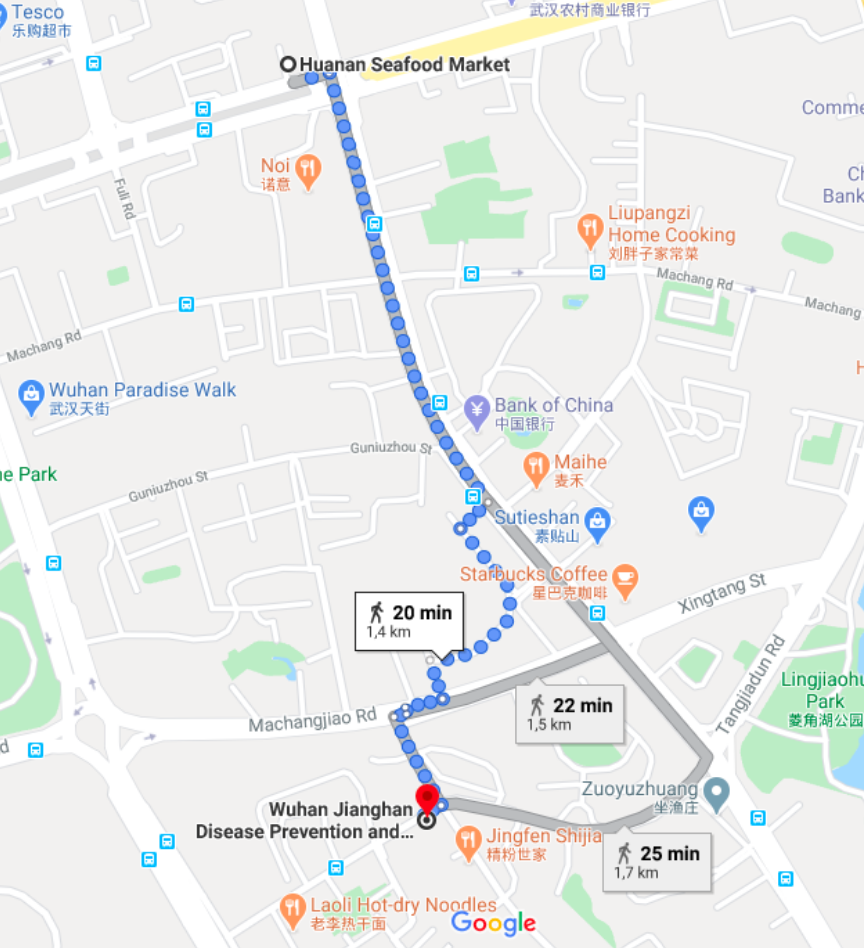 https://www.google.com/maps/dir/Huanan+Seafood+Market,+Fazhan+Avenue,+Jianghan+District,+Wuhan,+Hubei,+China/Wuhan+Centres+for+Disease+Prevention+%26+Control
While the simple existence of these laboratories does not make them suspects, their proximity to the Huanan Seafood Market does. In Claim 2 we will prove it is entirely possible, and even likely, that an accident at either of these labs could have resulted in Patient Zero.
For now, let us prove that both of these labs have conducted experiments on the SARS-CoV-1 virus, some of which have resulted in variants of the virus, and may still be holding such viruses today. Furthermore, we will prove both labs have conducted experiments involving SARS-CoV-1 on live animals. The Wuhan Institute of Virology will hereby be referred to as WIV and the Wuhan Centre for Disease Prevention & Control as WHCDC.
8.3 A Note on Biowarfare
This document does not make any attempt to link the work done at these laboratories as part of a "bioweapon" or "bio-warfare" program.
The research that has been conducted in these labs, specifically in regards to peer reviewed papers from the WIV and less documented experiments at the WHCDC, may well have advanced our understanding of virology as a species. The sheer existence of such work does not equate to a "bio-warfare program."
Furthermore, even if these labs are engaging in "bio-warfare" research, depending on the type of research, it would still be permissible under international law:
Biological Weapons Convention
The scope of the BWC’s prohibition is defined in Article 1 (the so-called general purpose criterion). This includes all microbial and other biological agents or toxins and their means of delivery (with exceptions for medical and defensive purposes in small quantities). Subsequent Review Conferences have reaffirmed that the general purpose criterion encompasses all future scientific and technological developments relevant to the Convention. It is not the objects themselves (biological agents or toxins), but rather certain purposes for which they may be employed which are prohibited; similar to Art.II, 1 in the Chemical Weapons Convention (CWC). Permitted purposes under the BWC are defined as prophylactic, protective and other peaceful purposes. The objects may not be retained in quantities that have no justification or which are inconsistent with the permitted purposes.
China, and indeed any country that is a signatory to the BWC, is allowed to develop offensive bioweapons, in "quantities that are consistent with the permitted purposes," as long as the purpose of doing so is to develop defenses against them.
Strategically, it would be a foolish choice to perform illegal bio-warfare research in the most closely monitored, internationally-linked biological lab in China. Western intelligence agencies are obviously aware of its existence, and the Chinese government knows that. Such illegal work, if done at all, is much more likely to be done in confidential military bases and covert labs that are not made known to the public.
In this claim, it is irrelevant whether the research being performed was for bio-warfare purposes or not.
We could not find any direct evidence supporting the theory that SARS-CoV-2 was intentionally released from a laboratory.
8.4 A Note on Bio-Safety Levels
As previously mentioned, the WIV has a BSL-4 lab. The WHCDC also operates BSL-2 labs. What does this mean?
The Bio-Safety Level (BSL), also known as the Pathogen or Prevention level (P) in the European Union, dictates the regulations and requirements present in a bio-laboratory. These precautions are necessary to prevent harm to employees, the people who interact with them, and life as a whole. The BSL of a given laboratory, at least in the United States, limits the type of pathogens it can operate with. For example, Ebola, smallpox, and plague can only be present in BSL-4 environments due to their potential to cause harm. According to both the WHO and CDC, activites relating to SARS-CoV-1 must be performed in at least a BSL-2 lab. For 2019-nCoV (now SARS-CoV-2), the CDC recommends most activities be carried out with "BSL-3 precautions".
The CDC also provides a BSL infographic.
8.5 The Wuhan Institute of Virology, Chinese Academy of Sciences
The WIV has existed for decades; its Wikipedia page lists its formation year as 1956. It was only in 2014 that it finished construction of its BSL-4 lab, making it the only public institution operating a BSL-4 lab in China:
Inside the Chinese lab poised to study world’s most dangerous pathogens (February 22, 2017)
It will focus on the control of emerging diseases, store purified viruses and act as a World Health Organization ‘reference laboratory’ linked to similar labs around the world. “It will be a key node in the global biosafety-lab network,” says lab director Yuan Zhiming.
...
The lab’s first project will be to study the BSL-3 pathogen that causes Crimean–Congo haemorrhagic fever: a deadly tick-borne virus that affects livestock across the world, including in northwest China, and that can jump to people.
Future plans include studying the pathogen that causes SARS, which also doesn’t require a BSL-4 lab, before moving on to Ebola and the West African Lassa virus, which do. Some one million Chinese people work in Africa; the country needs to be ready for any eventuality, says Yuan. “Viruses don’t know borders.”
Source: https://www.nature.com/news/inside-the-chinese-lab-poised-to-study-world-s-most-dangerous-pathogens-1.21487 (archived)
Since its inception, the global biosafety community has had concerns about this particular BSL-4 lab. From the same article:
But worries surround the Chinese lab, too. The SARS virus has escaped from high-level containment facilities in Beijing multiple times, notes Richard Ebright, a molecular biologist at Rutgers University in Piscataway, New Jersey. Tim Trevan, founder of CHROME Biosafety and Biosecurity Consulting in Damascus, Maryland, says that an open culture is important to keeping BSL-4 labs safe, and he questions how easy this will be in China, where society emphasizes hierarchy. “Diversity of viewpoint, flat structures where everyone feels free to speak up and openness of information are important,” he says.
Yuan says that he has worked to address this issue with staff. “We tell them the most important thing is that they report what they have or haven’t done,” he says. And the lab’s international collaborations will increase openness. “Transparency is the basis of the lab,” he adds.
Has the WIV ever conducted experiments involving the SARS-CoV-1 virus?
Indeed, it has. In fact, it worked with the SARS virus years before establishing the BSL-4 lab (this, by itself, is fine, as SARS-CoV-1 is not a BSL-4 pathogen).
8.5.1 Paper 1
Difference in Receptor Usage between Severe Acute Respiratory Syndrome (SARS) Coronavirus and SARS-Like Coronavirus of Bat Origin (2007)
A group of SARS-like CoVs (SL-CoVs) has been identified in horseshoe bats. SL-CoVs and SARS-CoVs share identical genome organizations and high sequence identities, with the main exception of the N terminus of the spike protein (S), known to be responsible for receptor binding in CoVs. In this study, we investigated the receptor usage of the SL-CoV S by combining a human immunodeficiency virus-based pseudovirus system with cell lines expressing the ACE2 molecules of human, civet, or horseshoe bat. In addition to full-length S of SL-CoV and SARS-CoV, a series of S chimeras was constructed by inserting different sequences of the SARS-CoV S into the SL-CoV S backbone. Several important observations were made from this study. First, the SL-CoV S was unable to use any of the three ACE2 molecules as its receptor. Second, the SARS-CoV S failed to enter cells expressing the bat ACE2. Third, the chimeric S covering the previously defined receptor-binding domain gained its ability to enter cells via human ACE2, albeit with different efficiencies for different constructs. Fourth, a minimal insert region (amino acids 310 to 518) was found to be sufficient to convert the SL-CoV S from non-ACE2 binding to human ACE2 binding, indicating that the SL-CoV S is largely compatible with SARS-CoV S protein both in structure and in function. The significance of these findings in relation to virus origin, virus recombination, and host switching is discussed.
Source: https://www.ncbi.nlm.nih.gov/pmc/articles/PMC2258702/ (archived)
"First, the SL-CoV S was unable to use any of the three ACE2 molecules as its receptor."
"we investigated the receptor usage of the SL-CoV S by combining a human immunodeficiency virus-based pseudovirus system with cell lines expressing the ACE2 molecules of human, civet, or horseshoe bat"
"Third, the chimeric S covering the previously defined receptor-binding domain gained its ability to enter cells via human ACE2"
In layman’s terms:
We found this SARS-like virus ("S") that couldn’t infect human cells.
So, we combined S with parts of HIV, which does infect human cells, to see if this new S could infect human cells.
The new S ("chimeric S") can infect human cells.
We find that WIV was involved in this study in the Materials and Methods section:
Materials and Methods
A MAb against p24 of HIV was generated by the HIV group of the Wuhan Institute of Virology (unpublished results). Rabbit polyclonal antibodies against ACE2 of the bat R. pearsonii (RpACE2) was generated using a recombinant RpACE2 protein expressed in Escherichia coli at our laboratory at the Wuhan Institute of Virology, following standard procedures.
All 10 scientists who are associated with this paper are also associated with the Wuhan Institute of Virology. From the paper’s Author Information tab:
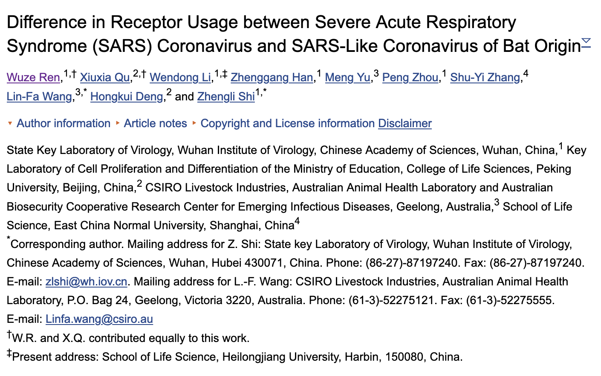
Finally, we would like to highlight this prophetic paragraph in the Discussion section:
Considering the documented observations of coinfection of the same bat species by different CoVs, the same CoVs infecting different bat species (26, 29, 39), the high density of bat habitats, and the propensity for genetic recombination among different CoVs, it is not unreasonable to conclude that bats are a natural mixing vessel for the creation of novel CoVs and that it is only a matter of time before some of them cross species barriers into terrestrial mammal and human populations. The findings presented in this study serve as the first example of host switching achievable for G2b CoVs under laboratory conditions by the exchange of a relatively small sequence segment among these previously unknown CoVs.
The papers referenced in this paragraph are provided below:
26 - Severe acute respiratory syndrome coronavirus-like virus in Chinese horseshoe bats
39 - Prevalence and genetic diversity of coronaviruses in bats from China
In layman’s terms:
Multiple coronaviruses can infect the same bat (coinfection)
Those same viruses can infect different kinds of bats
There’s a lot of bats everywhere
Coronaviruses like to mix their genes together (recombinate)
If two coronaviruses infect the same bat and recombinate, they can potentially result in a novel (never before recognized) coronavirus
It only takes a few changes ("exchange of a relatively small sequence segment") between two coronaviruses to result in a third coronavirus that can infect other animals ("host-switching")
The odds of this happening are pretty good!
Indeed, as we know now, the odds were pretty good. Of course, what we don’t know is whether this spillover event happened in the wild (currently unproven) or in the WIV (this paper proves that they have successfully done it before, in this very location).
8.5.2 Paper 2
WIV didn’t stop researching SARS back in 2007, either. A second paper, from 2015, not only reiterates the first paper’s findings, but outright claims they "synthetically re-derived an infectious full-length SHC014 recombinant virus and demonstrate robust viral replication both in vitro and in vivo."
A SARS-like cluster of circulating bat coronaviruses shows potential for human emergence (2015)
The emergence of severe acute respiratory syndrome coronavirus (SARS-CoV) and Middle East respiratory syndrome (MERS)-CoV underscores the threat of cross-species transmission events leading to outbreaks in humans. Here we examine the disease potential of a SARS-like virus, SHC014-CoV, which is currently circulating in Chinese horseshoe bat populations. Using the SARS-CoV reverse genetics system, we generated and characterized a chimeric virus expressing the spike of bat coronavirus SHC014 in a mouse-adapted SARS-CoV backbone. The results indicate that group 2b viruses encoding the SHC014 spike in a wild-type backbone can efficiently use multiple orthologs of the SARS receptor human angiotensin converting enzyme II (ACE2), replicate efficiently in primary human airway cells and achieve in vitro titers equivalent to epidemic strains of SARS-CoV. Additionally, in vivo experiments demonstrate replication of the chimeric virus in mouse lung with notable pathogenesis. Evaluation of available SARS-based immune-therapeutic and prophylactic modalities revealed poor efficacy; both monoclonal antibody and vaccine approaches failed to neutralize and protect from infection with CoVs using the novel spike protein. On the basis of these findings, we synthetically re-derived an infectious full-length SHC014 recombinant virus and demonstrate robust viral replication both in vitro and in vivo. Our work suggests a potential risk of SARS-CoV re-emergence from viruses currently circulating in bat populations.
Source: https://www.ncbi.nlm.nih.gov/pubmed/26552008 (archived)
Three important definitions to understand this in layman’s terms:
"in vitro" means an experiment using cells (i.e. petri dishes and test tubes)
"in vivo" means an experiment using real, living organisms (i.e. mice)
"chimera virus" means it is a genetic mixture of two separate viruses
Once again, in layman’s terms:
We found a virus in bats called SHC014-CoV that is similar to SARS.
We constructed a chimera virus using SHC014-CoV as a basis that could also infect mice cells.
We found the same virus can infect "human airway cells" and impact them the same way as "epidemic strains of SARS-CoV" in vitro. (paraphrased: "it’s as bad as SARS")
We tested the same virus on real mice ("in vivo"), and found it could infect their lungs.
We tried to fight the virus using antibodies and vaccines that help fight SARS, and couldn’t find anything that helped. ("poor efficacy")
We synthetically cloned this chimera virus and tested it both in vitro and in vivo, and found it works well.
And the tie to WIV, in the Author Information:
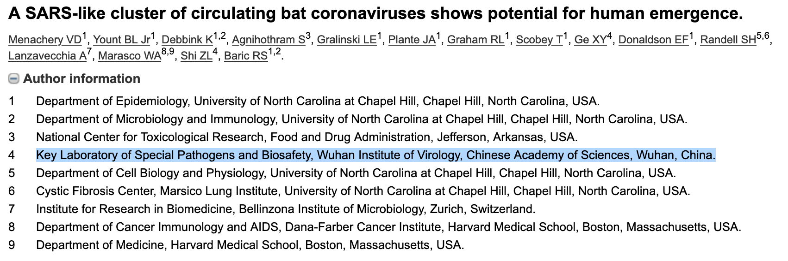
Rather than dissect these findings, here is a Nature article describing the controversy over this paper:
Engineered bat virus stirs debate over risky research (November 12, 2015)
But other virologists question whether the information gleaned from the experiment justifies the potential risk. Although the extent of any risk is difficult to assess, Simon Wain-Hobson, a virologist at the Pasteur Institute in Paris, points out that the researchers have created a novel virus that “grows remarkably well” in human cells. “If the virus escaped, nobody could predict the trajectory,” he says.
...
In their paper, the study authors also concede that funders may think twice about allowing such experiments in the future. "Scientific review panels may deem similar studies building chimeric viruses based on circulating strains too risky to pursue," they write, adding that discussion is needed as to "whether these types of chimeric virus studies warrant further investigation versus the inherent risks involved".
Source: https://www.nature.com/news/engineered-bat-virus-stirs-debate-over-risky-research-1.18787 (archived)
At this point, you may notice the list of authors for these two papers are quite similar. You will be able to find many of these authors in our next set of papers. In particular, Dr. Shi Zhengli is a recurring name in every single paper we cite from the WIV (which is to be expected - she is a director at the institute).
8.5.3 Paper 3
Both papers mention the receptor "angiotensin-converting enzyme-2." In Paper 1, WIV took a virus that previously could not bind to ACE2 and modified it slightly to enable it to bind to ACE2 receptors. In Paper 2, they synthetically developed a virus that could do the same thing.
SARS-CoV-1 and SARS-CoV-2 also bind to the ACE2 receptor:
Comparative genetic analysis of the novel coronavirus (2019-nCoV/SARS-CoV-2) receptor ACE2 in different populations (February 24, 2020)
The ACE2 gene encodes the angiotensin-converting enzyme-2, which has been proved to be the receptor for both the SARS-coronavirus (SARS-CoV) and the human respiratory coronavirus NL63. Recent studies and analyses indicate that ACE2 could be the host receptor for the novel coronavirus 2019-nCoV/SARS-CoV-21,2. Previous studies demonstrated the positive correlation of ACE2 expression and the infection of SARS-CoV in vitro3,4. A number of ACE2 variants could reduce the association between ACE2 and S-protein in SARS-CoV or NL635. Therefore, the expression level and expression pattern of human ACE2 in different tissues might be critical for the susceptibility, symptoms, and outcome of 2019-nCoV/SARS-CoV-2 infection.
Source: https://www.nature.com/articles/s41421-020-0147-1 (archived)
While it is possible, and even likely, for a SARS-like coronavirus to develop the ability to bind to ACE2 receptors in the wild (as Paper 2 claims), this unfortunately also means we cannot rule out the connection to WIV. If SARS-CoV-2 had bound to different receptors, that would make the contents of these papers less suspicious for the claims at hand.
8.5.4 Paper 4
In an internationally renowned discovery in 2017, the WIV found a cave in Yunnan Province that almost certainly held the first SARS-CoV-1 virus:
Discovery of a rich gene pool of bat SARS-related coronaviruses provides new insights into the origin of SARS coronavirus (November 30, 2017)
In addition, we report the first discovery of bat SARSr-CoVs highly similar to human SARS-CoV in ORF3b and in the split ORF8a and 8b. Moreover, SARSr-CoV strains from this cave were more closely related to SARS-CoV in the non-structural protein genes ORF1a and 1b compared with those detected elsewhere. Recombination analysis shows evidence of frequent recombination events within the S gene and around the ORF8 between these SARSr-CoVs. We hypothesize that the direct progenitor of SARS-CoV may have originated after sequential recombination events between the precursors of these SARSr-CoVs. Cell entry studies demonstrated that three newly identified SARSr-CoVs with different S protein sequences are all able to use human ACE2 as the receptor, further exhibiting the close relationship between strains in this cave and SARS-CoV.
...
Bat samplings were conducted ten times from April 2011 to October 2015 at different seasons in their natural habitat at a single location (cave) in Kunming, Yunnan Province, China. All members of field teams wore appropriate personal protective equipment, including N95 masks, tear-resistant gloves, disposable outerwear, and safety glasses. Bats were trapped and fecal swab samples were collected as described previously [9]. Clean plastic sheets measuring 2.0 by 2.0 m were placed under known bat roosting sites at about 18:00 h each evening for collection of fecal samples. Fresh fecal pellets were collected from sheets early in the next morning. Each sample (approximately 1 gram of fecal pellet) was collected in 1ml of viral transport medium composed of Hank’s balanced salt solution at pH7.4 containing BSA (1%), amphotericin (15 μg/ml), penicillin G (100 units/ml), and streptomycin (50 μg/ml), and were stored at -80°C until processing. Bats trapped for this study were released back into their habitat.
Source: https://www.ncbi.nlm.nih.gov/pmc/articles/PMC5708621/ (archived)
Now, it claims that this same exact cave most likely contained the bat host for SARS-CoV-2:
A pneumonia outbreak associated with a new coronavirus of probable bat origin (February 3, 2020)
Full-length genome sequences were obtained from five patients at an early stage of the outbreak. The sequences are almost identical and share 79.6% sequence identity to SARS-CoV. Furthermore, we show that 2019-nCoV is 96% identical at the whole-genome level to a bat coronavirus. Pairwise protein sequence analysis of seven conserved non-structural proteins domains show that this virus belongs to the species of SARSr-CoV.
...
We then found that a short region of RNA-dependent RNA polymerase (RdRp) from a bat coronavirus (BatCoV RaTG13)—which was previously detected in Rhinolophus affinis from Yunnan province—showed high sequence identity to 2019-nCoV. We carried out full-length sequencing on this RNA sample (GISAID accession number EPI_ISL_402131). Simplot analysis showed that 2019-nCoV was highly similar throughout the genome to RaTG13 (Fig. (Fig.1c),1c), with an overall genome sequence identity of 96.2%. Using the aligned genome sequences of 2019-nCoV, RaTG13, SARS-CoV and previously reported bat SARSr-CoVs, no evidence for recombination events was detected in the genome of 2019-nCoV. Phylogenetic analysis of the full-length genome and the gene sequences of RdRp and spike (S) showed that—for all sequences—RaTG13 is the closest relative of 2019-nCoV and they form a distinct lineage from other SARSr-CoVs.
...
The close phylogenetic relationship to RaTG13 provides evidence that 2019-nCoV may have originated in bats.
Source: https://www.ncbi.nlm.nih.gov/pmc/articles/PMC7095418/ (archived)
From the 2017 paper, we know that bat samples have been taken from the cave since 2011. The virus RaTG13, which this paper claims is a 96.2% match with SARS-CoV-2, likely came from samples taken from this cave as well.
When it comes to coronaviruses, a 96.2% match is very, very close. You may have heard the common saying that humans share 96% of their DNA with other primates, such as chimpanzees. While this is true, a virus has a significantly smaller genome (only tens of thousands of base pairs compared to over 6 billion in the human genome).
Importantly, this paper shows that WIV has sampled viruses nearly identical to SARS-CoV-2 in the past, and may still be storing samples of these viruses today.
8.5.5 Paper 5
Fatal swine acute diarrhoea syndrome caused by an HKU2-related coronavirus of bat origin (April 4, 2018)
Experiments were carried out strictly in accordance with the recommendations of the Guide for the Care and Use of Laboratory Animals of the National Institutes of Health. The use of animals in this study was approved by the South China Agricultural University Committee of Animal Experiments (approval number 201004152).
...
The intestinal tissue samples from healthy and diseased animals (intestinal samples excised from euthanized piglets, then ground to make slurry for the inoculum and NGS was performed to confirm no other pig pathogens were found in the samples), were used to feed two groups of 5 (control) and 7 (infection) animals, respectively. For the second experiment, isolated SADS-CoV was used to infect healthy piglets from a farm in Guangdong, which had been free of diarrheal disease for a number of weeks. These piglets were from the same breed as those on SADS-affected farms, to eliminate potential host factor differences and to more accurately reproduce the conditions that occurred during the outbreak in the region. Both groups of piglets were cared for at a known pig disease-free facility. Again, qPCR and NGS were used to make sure that there was no other known swine diarrhoea virus present in the virus inoculum or any of the experimental animals. Two groups (6 for each group) of three-day old piglets were inoculated with SADS-CoV culture supernatant or normal cell culture medium as control. NGS and qPCR were used to confirm that there were no other known swine pathogens in the inoculum.
For both experiments, animals were recorded daily for signs of diseases, such as diarrhoea, weight loss and death. Faecal swabs were collected daily from all animals and screened for known swine diarrhoea viruses by qPCR. Weight loss was calculated as the percentage weight loss compared the original weight at day 0 with a threshold of >5%. It is important to point out that piglets when they are three days old tend to suffer from diarrhoea and weight loss when they are taken away from sows and the natural breast-feeding environment even without infection. At experimental endpoints, piglets were humanely euthanized and necropsies performed. Pictures were taken to record gross pathological changes to the intestines. Ileal, jejunal and duodenal tissues were taken from selected animals and stored at –80 °C for further analysis.
Source: https://www.ncbi.nlm.nih.gov/pmc/articles/PMC7094983/ (archived)
In this experiment, a similar virus to SARS-CoV-1, SADS-CoV, was intentionally injected into piglets to study its symptoms. This, along with Paper 2, proves without a doubt that WIV has performed experiments on live animals involving bat coronaviruses.
8.5.6 Paper 6
To further drive home the point that the WIV was heavily researching bat coronaviruses, here is a study on the efficacy of a specific disinfectant:
Evaluation of MICRO-CHEM PLUS as a Disinfectant for Biosafety Level 4 Laboratory in China (March 5, 2018)
MICRO-CHEM PLUS Detergent Disinfectant Cleaner (MCP) is a commonly used disinfectant at biosafety level 4 (BSL-4) laboratories where research activities involving the most dangerous pathogens must be conducted. Using bat severe acute respiratory syndrome (SARS)–like coronavirus (CoV) WIV1 as a surrogate pathogen, we extensively evaluated the disinfection efficacy of 5% MCP in the first BSL-4 laboratory in China. WIV1 was completely inactivated in 1 minute of contact time by a 27-fold dilution of 5% MCP with a titer reduction of more than 7 lg 50% tissue culture infectious dose (TCID50)/mL, while a 243-fold dilution of 5% MCP showed very weak activity.
Source: https://journals.sagepub.com/doi/full/10.1177/1535676018758891 (archived)
They even used a bat coronavirus to test their disinfecting methods!
8.5.7 Paper 7
Yet another animal test involving piglets and a TGEV coronavirus was carried out in early 2019:
The N-Terminal Domain of Spike Protein Is Not the Enteric Tropism Determinant for Transmissible Gastroenteritis Virus in Piglets (March 30, 2019)
Transmissible gastroenteritis virus (TGEV), one of the representative CoVs of the Alphacoronavirus genus, is the etiologic agent of transmissible gastroenteritis (TGE) in pigs [12]. TGEV is widespread in the pork industry, causes high mortality in neonatal pigs, and is generally thought to share a common ancestor with porcine respiratory coronavirus (PRCV) [13].
...
Thirteen 2-day-old piglets from a TGEV-free sow were randomly divided into three groups and fed fresh liquid milk diluted in warm water every 4 h. All piglets were confirmed to be free of TGEV, PEDV, porcine delta coronavirus (PDCoV), and rotavirus (RV) through a RT-PCR assay of piglet feces before viral challenge. The piglet weights were measured and recorded at the beginning of the challenge. The piglet challenge group was intranasally and orally inoculated with 500 μL (1 × 105 TCID50) of chimeric virus, and the mock-infected control group was intranasally and orally inoculated with 500 μL of DMEM.
The piglets were monitored for their clinical status every 4 h. Any piglet exhibiting moribund signs were euthanized. At 7 days post-inoculation, all surviving piglets were euthanized consecutively to reduce the stress of the other piglets. Before necropsy, the weight of each piglet was recorded. At necropsy, five sections of the duodenum, jejunum, ileum, colon and stomach were collected, fixed in 10% formalin for histopathological examination and stained with hematoxylin and eosin (HE). After necropsy, samples of jejunal contents and lung tissue were collected for virus detection by nested RT-PCR using the specific primers F1/R1 and F2/R2 (Table 2) [50].
Source: https://www.ncbi.nlm.nih.gov/pmc/articles/PMC6520731/ (archived)
8.5.8 Paper 8
We’re not done with piglets yet!
A conserved region of nonstructural protein 1 from alphacoronaviruses inhibits host gene expression and is critical for viral virulence (July 26, 2019)
To test the pathogenicity of TGEV(91–95sg), an animal experiment was carried out. Piglets that had not been breastfed at birth were randomly divided into two groups with five piglets in each group; in addition, a mock-infected control group was formed that contained three piglets. The piglets were orally inoculated at a dose of 1 × 106 50% tissue culture infective dose (TCID50) with the respective chimeric virus or mock-infected with Dulbecco’s modified Eagle’s medium (DMEM). The animal experiments showed that replacement of the selected motif (amino acids 91–95) reduced the pathogenic properties of TGEV. Furthermore, in the TGEV group, all five piglets exhibited obvious dehydration and weight loss. Severe diarrhea began at 48 h postinfection, and all piglets died within 96 h, indicating the acquisition of lethal characteristics (Fig. 7C).
Source: https://www.ncbi.nlm.nih.gov/pmc/articles/PMC6746460 (archived)
8.5.9 Paper 9
Molecular mechanism for antibody-dependent enhancement of coronavirus entry (November 27, 2019)
Antibody-dependent enhancement (ADE) of viral entry has been a major concern for epidemiology, vaccine development, and antibody-based drug therapy. However, the molecular mechanism behind ADE is still elusive. Coronavirus spike protein mediates viral entry into cells by first binding to a receptor on the host cell surface and then fusing viral and host membranes. In this study, we investigated how a neutralizing monoclonal antibody (MAb), which targets the receptor-binding domain (RBD) of Middle East respiratory syndrome (MERS) coronavirus spike, mediates viral entry using pseudovirus entry and biochemical assays.
...
Our study reveals a novel molecular mechanism for antibody-enhanced viral entry and can guide future vaccination and antiviral strategies.
Source: https://jvi.asm.org/content/94/5/e02015-19 (archived)
As recently as November 2019, WIV was conducting research on MERS-CoV, which is a direct relative to SARS-CoV-1.
8.5.10 Job Postings
From November to December, WIV uploaded two job postings to its website:
http://www.whiov.cas.cn/105341/ (archived)
Page translated to English via Google Translate.
The November 18, 2019, job posting, titled "武汉病毒研究所周鹏学科组博士后招聘启事", contains the following section:
Postdoctoral Recruitment Notice of Zhou Peng Discipline Group of Wuhan Virus Research Institute (November 18, 2019)
The main research directions of the research group:
Taking bat as the research object, answer the molecular mechanism that can coexist with Ebola and SARS- related coronavirus for a long time without disease, and its relationship with flight and longevity. Virology, immunology, cell biology and multiple omics are used to compare the differences between humans and other mammals.
Page translated to English via Google Translate.
Source: http://www.whiov.cas.cn/105341/201911/t20191118_5438006.html (archived)
The second posting, "武汉病毒所石正丽学科组博士后招聘启事", uploaded December 24, 2019 (7 days before China reported cases of unknown pneumonia to the WHO), says:
Postdoctoral Recruitment Notice of Shi Zhengli Discipline Group of Wuhan Virology Institute (December 24, 2019)
1. Recruitment positions: 1-2 postdoctors
Proposed recruitment direction 1: Ecological study of bat migration and virus transmission
Prospective direction 2: bat virus cross-species infection and its pathogenicity
...
Introduction to PI
Shi Zhengli, Ph.D., researcher, team leader of the Department of Emerging Viruses, Wuhan Institute of Virology, Chinese Academy of Sciences, director of the Center for Emerging Infectious Diseases, Wuhan Institute of Virology, Chinese Academy of Sciences, director of the Key Laboratory of Pathogenic Biology and Biosafety, Chinese Academy of Sciences , Editor-in-chief of " Virologica Sinica " magazine. Long-term research on the pathogenic biology of bats carrying important viruses has confirmed the origin of bats for major human and animal infectious diseases such as SARS and SADS , and discovered and identified a large number of new viruses in bats and rodents.
...
The New Virus Discipline Group focuses on the etiology of new viruses and their infection mechanisms, including bat and rodent virus discovery, early warning and transmission rules research, cross-species infection mechanism and pathogenicity of coronavirus and other important bat virus Research, new virus serology and molecular diagnostic technology. The subjects undertaken by the discipline group include the National Natural Science Foundation’s major instrument research and development projects, key projects, general projects, the Chinese Academy of Sciences pilot project, the Chinese Academy of Sciences China-Africa Research Center project, the US NIH project, etc.
Page translated to English via Google Translate.
Source: http://www.whiov.cas.cn/105341/201912/t20191224_5471634.html (archived)
From these job postings, it cannot be denied that the WIV was looking for personnel to research bat coronaviruses, including the "cross-species infection mechanism," at the time of the SARS-CoV-2 spillover event.
8.5.11 Conclusion: Highly Likely
It is worth addressing the Editor’s Note, now placed above Paper 3:
Editors’ note, March 2020: We are aware that this story is being used as the basis for unverified theories that the novel coronavirus causing COVID-19 was engineered. There is no evidence that this is true; scientists believe that an animal is the most likely source of the coronavirus.
Indeed; the claim here is not that SARS-CoV-2 was engineered. Rather, what this story and the associated papers prove, is that the Wuhan Institute of Virology has:
Conducted research involving the SARS-CoV-1 virus
"Recombinated" and "synthetically derived" different viruses based on SARS-CoV-1, some of which could be far more dangerous than SARS proper
Conducted tests on live cells ("in vitro") involving variants of SARS-CoV-1
Conducted live animal tests ("in vivo") involving variants of SARS-CoV-1
Conducted live animal tests ("in vivo") involving SADS-CoV
Conducted live piglet tests ("in vivo") with TGEV coronavirus as recently as July 2019
Conducted experiments with MERS-CoV in November 2019
Used variants of SARS-CoV-1 to test disinfecting procedures
Was actively hiring researchers to study bat coronaviruses and how they can infect other species in late November and December 2019
Disregarding the possibility of a lab accident, which will be investigated in Claim 2, the likelihood that WIV did not store bat coronaviruses within its labs is extremely low. What is the likelihood that one of these stored coronaviruses was SARS-CoV-2?
How can we be certain it was not?
8.5.12 Shi Zhengli’s Response
How China’s ’Bat Woman’ Hunted Down Viruses from SARS to the New Coronavirus (March 11, 2020)
BEIJING—The mysterious patient samples arrived at Wuhan Institute of Virology at 7 P.M. on December 30, 2019. Moments later, Shi Zhengli’s cell phone rang. It was her boss, the institute’s director. The Wuhan Center for Disease Control and Prevention had detected a novel coronavirus in two hospital patients with atypical pneumonia, and it wanted Shi’s renowned laboratory to investigate.
...
Shi—a virologist who is often called China’s “bat woman” by her colleagues because of her virus-hunting expeditions in bat caves over the past 16 years—walked out of the conference she was attending in Shanghai and hopped on the next train back to Wuhan. “I wondered if [the municipal health authority] got it wrong,” she says. “I had never expected this kind of thing to happen in Wuhan, in central China.” Her studies had shown that the southern, subtropical areas of Guangdong, Guangxi and Yunnan have the greatest risk of coronaviruses jumping to humans from animals—particularly bats, a known reservoir for many viruses. If coronaviruses were the culprit, she remembers thinking, “could they have come from our lab?”
...
On the train back to Wuhan on December 30 last year, Shi and her colleagues discussed ways to immediately start testing the patient samples. In the following weeks—the most intense and the most stressful time of her life—China’s bat woman felt she was fighting a battle in her worst nightmare, even though it was one she had been preparing for over the past 16 years. Using a technique called polymerase chain reaction, which can detect a virus by amplifying its genetic material, the first round of tests showed that samples from five of seven patients contained genetic sequences known to be present in all coronaviruses.
Shi instructed her team to repeat the tests and, at the same time, sent the samples to another laboratory to sequence the full viral genomes. Meanwhile she frantically went through her own laboratory’s records from the past few years to check for any mishandling of experimental materials, especially during disposal. Shi breathed a sigh of relief when the results came back: none of the sequences matched those of the viruses her team had sampled from bat caves. “That really took a load off my mind,” she says. “I had not slept a wink for days.”
Source: https://www.scientificamerican.com/article/how-chinas-bat-woman-hunted-down-viruses-from-sars-to-the-new-coronavirus1/ (archived)
Coronavirus: bat scientist’s cave exploits offer hope to beat virus ‘sneakier than Sars’ (February 6, 2020)
Daily internet searches for Shi’s name increased 2,000 times from the average in a recent week, yet most posts on China’s internet and social media about her were negative. Some people called Shi the “mother of the devil”.
The flood of attacks came with allegations that the new coronavirus had escaped from her laboratory, which is in the same city, Wuhan, where the outbreak happened.
As the attacks increased, Shi felt forced to respond. On Sunday afternoon she sent a message to all her friends on the social media site WeChat: “I swear with my life, [the virus] has nothing to do with the lab.”
...
When asked to comment about the social media attacks, she said only: “My time must be spent on more important matters.”
Source: https://www.scmp.com/news/china/society/article/3049397/bat-ladys-cave-exploits-offer-hope-beat-virus-sneakier-sars (archived)
Dr. Shi Zhengli (archived) is listed as an author for almost all of these papers. She is a chief scientist at the WIV and has been working there for decades. She likely understands SARS-CoV-1 and SARS-CoV-2 more than anyone reading or writing this document.
So, it is more than telling that she, too, considered the lab outbreak theory. Of course, after doing her research, she denies it. If she is correct, then we can indeed cross WIV off of our list of theories.
While we greatly respect Dr. Shi and her work, it would be foolish to discount the obvious bias involved. If this is an accident being covered up, why would she tell the truth?
Without independent, unbiased confirmation, how can we be certain that Dr. Shi is correct?
"We have investigated ourselves, and found nothing wrong."
8.6 Wuhan Centre for Disease Control
WIV was the prime suspect until a mysterious paper, released on ResearchGate in early February, pointed at the possibility of an infection acquired from the Wuhan Centre for Disease Control. Indeed, its close proximity to the Huanan Seafood Market - less than 3 miles away - combined with its lower BSL rating (BSL-2), also makes it a likely candidate.
The paper was released by Botao Xiao and Lei Xiao, from the South China University of Technology. It has since been redacted from ResearchGate. Attempting to access it (such as from http://doi.org/10.13140/RG.2.2.21799.29601) results in the following error page:
Botao Xiao and Lei Xiao’s profiles also appear to have disappeared from ResearchGate. https://www.researchgate.net/profile/Botao_Xiao leads to a directory search page.
According to Google Scholar, Botao Xiao has published peer reviewed papers in the fields of "Biophysics, Synthetic Biology, Molecular Biology, Biomedical Engineering, Biomechanics":
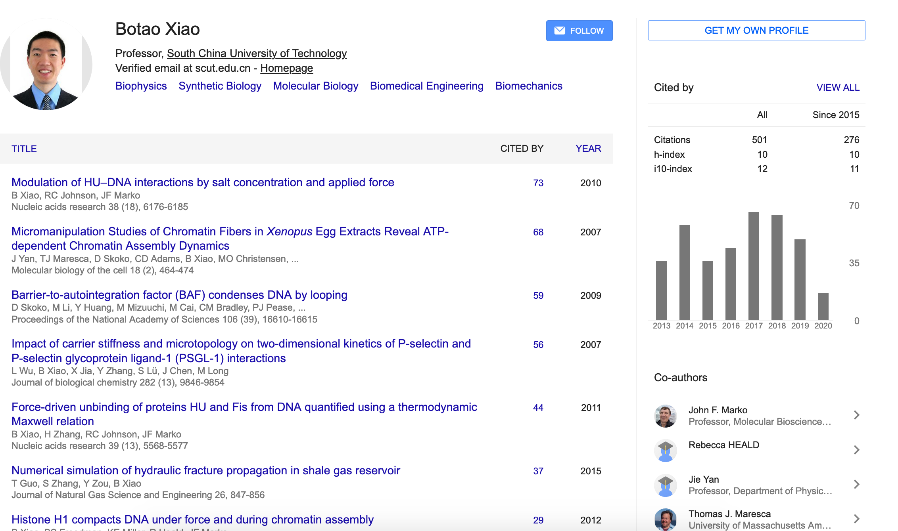
https://scholar.google.com/citations?user=ap6QWmcAAAAJ&hl=en (archived)
He received his PhD from Northwestern University and spent two years at Harvard Medical School:
Botao Xiao
Education
Ph.D., Northwestern University, Evanston, IL, USA, 2011
M.S., Chongqing University, Institute of Mechanics, Chinese Academy of Sciences, 2004
B.S., Chongqing University, 2000
Professional Experience
2017-Present: Professor, South China University of Technology
2013-2017: Professor, Huazhong University of Science and Technology
2011-2013: Postdoctoral Research Fellow, Harvard Medical School, Boston Children’s Hospital
http://www2.scut.edu.cn/biology_en/2017/0614/c5951a169022/page.htm (archived)
All of this is to say: Dr. Botao Xiao is not your common fool. He is certainly more educated than the average person in this area.
The possible origins of 2019-nCoV coronavirus
The 2019-nCoV has caused an epidemic of 28,060 laboratory-confirmed infections in human including 564 deaths in China by February 6, 2020. Two descriptions of the virus published on Nature this week indicated that the genome sequences from patients were almost identical to the Bat CoV ZC45 coronavirus. It was critical to study where the pathogen came from and how it passed onto human. An article published on The Lancet reported that 27 of 41 infected patients were found to have contact with the Huanan Seafood Market in Wuhan. We noted two laboratories conducting research on bat coronavirus in Wuhan, one of which was only 280 meters from the seafood market. We briefly examined the histories of the laboratories and proposed that the coronavirus probably originated from a laboratory. Our proposal provided an alternative origin of the coronavirus in addition to natural recombination and intermediate host.
https://web.archive.org/web/20200214144447/https://www.researchgate.net/publication/339070128_The_possible_origins_of_2019-nCoV_coronavirus (original page no longer available)
We will evaluate the paper in order of its claims as they related to WHCDC.
8.6.1 There Are Few Bats in Wuhan
The bats carrying CoV ZC45 were originally found in Yunnan or Zhejiang province, both of which were more than 900 kilometers away from the seafood market. Bats were normally found to live in caves and trees. But the seafood market is in a densely-populated district of Wuhan, a metropolitan of ~15 million people. The probability was very low for the bats to fly to the market. According to municipal reports and the testimonies of 31 residents and 28 visitors, the bat was never a food source in the city, and no bat was traded in the market. There was possible natural recombination or intermediate host of the coronavirus, yet little proof has been reported.
Earlier, Dr. Xiao asserted that SARS-CoV-2 is "86 to 96 percent" similar to the already known Bat-CoV-ZC45 virus, and uses this to claim that SARS-CoV-2 likely originated in bats. As we know from Paper 4, bat origin is now backed up by the Wuhan Institute of Virology as well.
His next claim is that it is very unlikely that there would be bats naturally living in the metropolitan distict of Wuhan, and in fact no bats were traded at the market at all.
Let us go one step further: there were no bats in Wuhan in December, because bats hibernate in the winter!
Genomic characterisation and epidemiology of 2019 novel coronavirus: implications for virus origins and receptor binding (January 30, 2020)
However, despite the importance of bats, several facts suggest that another animal is acting as an intermediate host between bats and humans. First, the outbreak was first reported in late December, 2019, when most bat species in Wuhan are hibernating. Second, no bats were sold or found at the Huanan seafood market, whereas various non-aquatic animals (including mammals) were available for purchase.
...
Therefore, on the basis of current data, it seems likely that the 2019-nCoV causing the Wuhan outbreak might also be initially hosted by bats, and might have been transmitted to humans via currently unknown wild animal(s) sold at the Huanan seafood market.
Source: https://www.thelancet.com/journals/lancet/article/PIIS0140-6736(20)30251-8/fulltext (archived)
The Lancet study suggests that there may have been a second animal involved in the spillover event. Several animals, such as snakes or pangolins, have been suggested, but the scientific community has not yet reached a consensus at this point in time.
What is confirmed are Dr. Xiao’s claims that bats were not sold at the market, and it would be highly unlikely for a bat to find itself in Wuhan (especially when it should be hibernating).
Therefore, the only likely way bats could be in Wuhan would be if they were brought there by humans. For example, if they were to be studied in a bio-laboratory.
8.6.2 Horseshoe Bats Were Once Present in WHCDC Labs
WHCDC hosted animals in laboratories for research purpose, one of which was specialized in pathogens collection and identification[4-6]. In one of their studies, 155 bats including Rhinolophus affinis were captured in Hubei province, and other 450 bats were captured in Zhejiang province[4].
Here is the paper referenced as [4]:
Phylogeny and Origins of Hantaviruses Harbored by Bats, Insectivores, and Rodents (February 7, 2013)
A total of 450 bats of eight different species were captured in Longquan city and Wenzhou city, Zhejiang Province in the spring of 2011 (Figure 1 and Table 1). Similarly, 155 bats representing eight species were captured in Hubei Province in the spring of 2012. A total of 81 insectivores (representing two species – Anourosorex squamipes and Suncus murinus) were captured in Lianghe county, Yunnan Province in the spring of 2010 and autumn of 2011. In 2006, two shrews (from the species Sorex isodon and Suncus murinus) were collected from Yakeshi city, Inner Mongolia Autonomous Region.
Source: https://journals.plos.org/plospathogens/article?id=10.1371/journal.ppat.1003159 (archived)
Dr. Xiao is correct again, however these bats were collected "in the spring of 2010 and autumn of 2011." It is unknown whether horseshoe bats were present in the WHCDC in late 2019. What is certain is that the WHCDC has engaged in bat collection activities before.
8.6.3 Researcher Was Once Attacked By Bats
The expert in collection was noted in the Author Contributions (JHT). Moreover, he was broadcasted for collecting viruses on nation-wide newspapers and websites in 2017 and 2019 7,8. He described that he was once by attacked by bats and the blood of a bat shot on his skin. He knew the extreme danger of the infection so he quarantined himself for 14 days[7]. In another accident, he quarantined himself again because bats peed on him. He was once thrilled for capturing a bat carrying a live tick[8].
The references are news articles:
We are looking for contributors who can provide links or translations for these news articles.
Tao P. Expert in Wuhan collected ten thousands animals: capture bats in mountain at night. Changjiang Times 2017.
Li QX, Zhanyao. Playing with elephant dung, fishing for sea bottom mud: the work that will change China’s future. thepaper 2019.
We unfortunately could not find the source articles. We did find a secondary source in the Washington Post:
How did covid-19 begin? Its initial origin story is shaky. (April 2, 2020)
Richard Ebright, a Rutgers microbiologist and biosafety expert, told me in an email that “the first human infection could have occurred as a natural accident,” with the virus passing from bat to human, possibly through another animal. But Ebright cautioned that it “also could have occurred as a laboratory accident, with, for example, an accidental infection of a laboratory worker.” He noted that bat coronaviruses were studied in Wuhan at Biosafety Level 2, “which provides only minimal protection,” compared with the top BSL-4.
Ebright described a December video from the Wuhan CDC that shows staffers “collecting bat coronaviruses with inadequate [personal protective equipment] and unsafe operational practices.” Separately, I reviewed two Chinese articles, from 2017 and 2019, describing the heroics of Wuhan CDC researcher Tian Junhua, who while capturing bats in a cave “forgot to take protective measures” so that “bat urine dripped from the top of his head like raindrops.”
Source: https://www.washingtonpost.com/opinions/global-opinions/how-did-covid-19-begin-its-initial-origin-story-is-shaky/2020/04/02/1475d488-7521-11ea-87da-77a8136c1a6d_story.html (archived)
Tian Junhea is almost certainly the "expert in collection" noted by Dr. Xiao, and Richard Ebright confirms that he did once come into contact with bat urine.
8.6.4 Surgery was Performed On Live Animals
Surgery was performed on the caged animals and the tissue samples were collected for DNA and RNA extraction and sequencing [4,5]. The tissue samples and contaminated trashes were source of pathogens. They were only ~280 meters from the seafood market. The WHCDC was also adjacent to the Union Hospital (Figure 1, bottom) where the first group of doctors were infected during this epidemic. It is plausible that the virus leaked around and some of them contaminated the initial patients in this epidemic, though solid proofs are needed in future study.
We have already shown that the WHCDC is extremely close to the Huanan Seafood Market. The referenced paper is again [4], and does indeed confirm that surgery was performed:
Phylogeny and Origins of Hantaviruses Harbored by Bats, Insectivores, and Rodents
Bats were captured with mist nets or harp traps in caves of natural roosts in Zhejiang Province in the spring of 2011, or in villages or caves in Hubei Province in the spring of 2012 (Figure 1). According to protocols described previously [47], insectivore animals were trapped in cages using fried foods as bait in the Inner Mongolia Autonomous Region in 2006 or in Yunnan Province in the autumns of 2010 and 2011. All animals kept were alive after capture. They were initially identified by morphological examination according to the criteria for bats described by Wang [48] and for insectivores by Chen [49], and further confirmed by sequence analysis of the mt-cyt b gene. All animals were anesthetized with ether before surgery, and all efforts were made to minimize suffering. Tissue samples of heart, liver, spleen, lung, kidney and brain were collected from bats and insectivores for detecting hantaviruses.
However, this surgery was most likely performed in 2010, a decade ago. It is not a direct link to the SARS-CoV-2 outbreak.
8.6.5 Conclusion: Plausible
The second half of the paper discussed the possibility of an infection arising from the WIV; we have already covered that quite well.
In summary, Botao Xiao and Lei Xiao lay the following claims:
WIV and WHCDC are extremely close to Huanan Seafood Market (correct)
There were likely no bats naturally living in Wuhan at the time of outbreak (correct)
Horshoe bats were once present in the WHCDC (correct, but unknown if in 2019)
A researcher once quarantined himself twice due to coming into contact with bat blood and urine (confirmed that he came into contact with bat urine)
Surgery was performed on bats in the WHCDC (correct, in the early 2010s)
Overall, the paper is largely made up of circumstancial evidence, which likely led to its withdrawl. However, if the claims of the researcher quarantining himself are true, that does show a lapse in biolaboratory safety that could contribute to an outbreak if not rectified. This, on top of the possible presence of bats, lead us to believe that the WHCDC could have been a viable source for a spillover event.
Regardless of the accuracy of the paper, we do very much agree with one part of it:
In summary, somebody was entangled with the evolution of 2019-nCoV coronavirus. In addition to origins of natural recombination and intermediate host, the killer coronavirus probably originated from a laboratory in Wuhan. Safety level may need to be reinforced in high risk biohazardous laboratories. Regulations may be taken to relocate these laboratories far away from city center and other densely populated places.
8.6.6 Botao Xiao’s Response
From the Wall Street Journal:
Coronavirus Epidemic Draws Scrutiny to Labs Handling Deadly Pathogens (March 5, 2020)
Also, a Northwestern University-trained DNA specialist in China who formerly worked in Wuhan, Botao Xiao of South China University of Technology, published a paper stating “the killer coronavirus probably originated from a laboratory in Wuhan.”
Just over a page long and known as a “pre-print,” the Feb. 6 paper didn’t go through a formal peer-review process. Its evidence included lab locations in Wuhan, reference to past incidents of mishandled pathogens elsewhere in China and the fact that a Wuhan researcher connected to the institute was famous for collecting thousands of bats, and sometimes getting bitten.
After British tabloids broadcast Mr. Xiao’s theory, and elements were propagated by Arkansas Sen. Tom Cotton, the institute, China’s government and state media issued stern and detailed denials that there had been any accident. “Conspiracy theories do nothing but create fear, rumours, and prejudice that jeopardise our global collaboration in the fight against this virus,” over two dozen virologists said in a joint letter carried in the Lancet medical journal.
...
Last week, Mr. Xiao told The Wall Street Journal he had withdrawn his paper. “The speculation about the possible origins in the post was based on published papers and media, and was not supported by direct proofs,” he said in a brief email on Feb. 26.
https://www.wsj.com/articles/coronavirus-epidemic-draws-scrutiny-to-labs-handling-deadly-pathogens-11583349777 (archived)
We mostly agree. However, it is curious is that Dr. Xiao did not just withdraw the paper, but deleted his profile entirely.
8.7 Outside of Wuhan
Paper 4 shows us that the cave most likely containing bats infected with SARS-CoV-2 is in Yunnan province. Yunnan provice is nearly 1,100 miles away from Wuhan, according to Google Maps. As Dr. Botao Xiao correctly stated, it would be unlikely for any bats to be living naturally in Wuhan, as it is a metropolis district that is avoided by most wildlife. Additionally, most bat species would be in hibernation around the time of outbreak.
One possible explanation would be that a farmer or laborer in Yunnan went into this cave (for example, to collect bat feces known as "guano" which is apparently used for agricultural reasons), and then travelled to Wuhan later after being infected. However, if this is the case, it is unlikely that the outbreak would have reached epidemic levels in Wuhan first. Consider that, again according to Google Maps, a trip from Yunnan to Wuhan would take over a day:
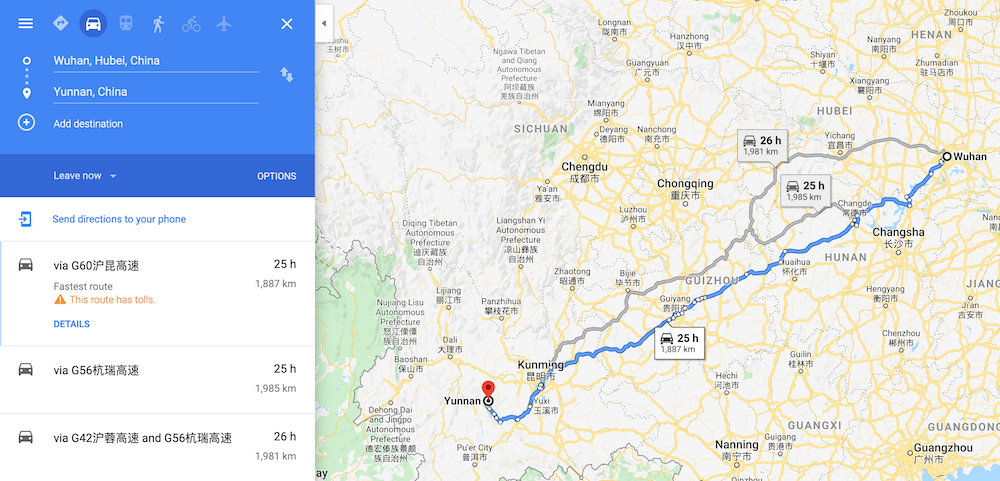
https://www.google.com/maps/dir/Wuhan,+Hubei,+China/Yunnan,+China/@27.404319,103.3009215
If Patient Zero had taken a bus or other form of public transport, SARS-CoV-2 would have begun spreading along that route, not in Wuhan. It would be fairly easy for Chinese authorities to determine a mutual connection amongst original cases by simply asking them if they had travelled recently and if so, what bus, train, or flight they took. Consider that this type of "contact tracing" was already used to determine that the Huanan Seafood Market was the original source of the outbreak (at least, according to Chinese state media).
Even if Patient Zero had driven him or herself to Wuhan, they most likely would have stopped along the way for bathroom and food breaks. Again, they would have spread the virus at whatever rest stop they went to. However, if this happened, it has not been reported.
If the outbreak indeed started from the Huanan Seafood Market, that means an animal at the market would have had to be infected with SARS-CoV-2. However, there were no bats sold at the Huanan Seafood Market: There Are Few Bats in Wuhan. This means that a spillover event, from a bat to some other intermediary animal, could not have occured at the Huanan Seafood Market. The intermediary animal would have had to be infected with SARS-CoV-2 before it arrived at the market.
The Huanan Seafood Market is known as a "wet" market, in which animal carcasses are sold rather than individual animal parts (i.e. you would buy a dead pig but not packaged pork). This means that the animal was almost certainly not safely packaged at the time of purchase or at the time it arrived at the market.
Consider the amount of people any type of meat encounters before finally reaching its consumer. First, the animal must be hunted before being sent to a market (wouldn’t the hunter be Patient Zero? Surely China would be able to look at its medical records to find hunters who died of unknown causes at the beginning of the outbreak). Depending on where the animal was first killed, this trip could take days and involve multiple modes of transportation, such as an airplane, bus, truck, train, or car. In every case but one (car) the animal would be inserted into the vehicle by employees at an airport, bus station, train station, or warehouse loading ramp. In every case but one, these are typically locations that have very high levels of foot traffic. If transporting the animal took multiple trips, this means that multiple employees at each location would have been exposed to the infected animal before it was finally placed on sale at the Huanan Seafood Market. We assert that it is highly unlikely anyone would drive a car filled with animal carcasses. Consider the stench.
Where are the sick employees who handled this infected animal? Where are the localized epidemics caused by these employees? What are the odds that every single one of them did not get sick until the animal reached the Huanan Seafood Market?
And, let’s also not take for granted, that in order for this animal to even get infected with SARS-CoV-2, it itself would have had to be involved in a spillover event with a bat. Remember that bats were hibernating during this time period.
In order for this pandemic to have originated outside of a Wuhan biological laboratory, the following would have had to take place:
An unknown animal comes into contact with a bat carrying the virus that would become SARS-CoV-2. This bat, for some reason, is not hibernating during the winter unlike most other bats.
This animal is then hunted and killed by some unknown person who does not fall ill and does not spread SARS-CoV-2 to anyone else.
This animal is then sent from its original location to the Huanan Seafood Market. Along the way, it is handled by dozens to hundreds of transportation employees, all of whom do not get sick and do not spread the virus.
The animal finally reaches the market, at which point multiple people who encounter it are hospitalized, and the virus begins to spread at very high rates.
Perhaps this virus had been spreading undetected amongst animal populations for the past few months prior to the outbreak. But if this is the case, why would the spillover event to a human occur in Huanan Seafood Market? China has many hundreds of these markets in every province. We are looking at 1-in-several-thousand-odds that a natural outbreak would begin in this market versus all the others.
Consider the odds we are looking at of a natural outbreak occuring in a market less than 10 miles away from two labs which have previously housed bats and conducted research on bat coronaviruses, rather than any other market in China.
Four months into the outbreak, China, with its vast electronic surveillance network and army of CCTV cameras, still has not been able to provide any evidence that this virus originated anywhere other than the market in Wuhan.
We argue that it would be incredibly unlikely for a virus to materialize out of thin air in this particular market.
9 Claim 2: Did SARS-CoV-2 Begin From an Infected Lab Worker or Animal in Wuhan?
We will begin this claim by first acknowledging that, obviously, the answer to this question remains unknown as of now. However, it is appropriate to collect and highlight all evidence that may support this theory, and evidence that may disprove it.
In Claim 1, we proved that it is highly probable that SARS-CoV-2 could have been present in the WIV or the WHCDC - either as samples in a lab, or in live animals held in cages. In either situation, a single accident could result in exposure ("Laboratory-Acquired Infection") to a human being that would become Patient Zero of the COVID-19 pandemic. Here, we will provide evidence that such accidental exposure is also highly probable.
9.1 Hypothetical Spillover Events
We claim that a spillover event involving these labs could have occured in one of several ways:
A researcher working in a BSL-2, BSL-3, or BSL-4 lab could have been exposed to the pathogen while performing an experiment. Because SARS-CoV-2 has an incubation period between several days and several weeks, and because infected people can spread it asymptomatically, a researcher who is infected would not know they are infected until symptoms appear, possibly hundreds of hours later. This is sufficient time for them to spread the virus to others if they do not self quarantine.
Lab animals involved in experiments could have been improperly disposed of or even illegally sold to markets. Whoever comes into contact with infected tissue would be at risk of infection, for example if they touch the animal and then touch their face, or even eat the animal.
An infected lab animal could have bitten or otherwise exposed a researcher to SARS-CoV-2, and they could either have not quarantined at all or quarantined for too little time (i.e. they would still be contagious past the quarantine period).
We will prove in this claim that evidence exists to support all three possibilities.
9.2 Bio-Laboratory Accidents Are Not Impossible
There are many factual, peer reviewed accounts of biolab accidents. Some have even resulted in dozens of human deaths. We will list only a fraction here.
As a foreword, accidents in these settings are a byproduct of the human condition. We are all human and we all make mistakes. It would be foolish to attribute malice where one can attribute stupidity (Hanlon’s Razor) - a bad day, one missed step, an unpredictable test subject, overworked or overstressed personnel - all of these can, have, and will lead to accidents.
It is also important to mention that these accidents have led to widespread improvements in lab work safety - preventing these types of accidents is the basis of the BSL system.
9.2.1 "Biohazard"
The following are accidents that allegedly occured in the Soviet Union, mainly brought to light by Ken Alibek in his 1999 book "Biohazard: The Chilling True Story of the Largest Covert Biological Weapons Program in the World – Told from Inside by the Man Who Ran It" (ISBN 0-385-33496-6).
His book is freely available in PDF form from the National Institute of Health. We highly recommend you read it.
9.2.1.1 Aral Smallpox Incident (1971)
The Aral smallpox incident was a July 30, 1971 outbreak of the viral disease which occurred as a result of a field test at a Soviet biological weapons (BW) facility on an island in the Aral Sea. The incident sickened ten people, of whom three died, and came to widespread public notice only in 2002.
According to Alibek, an open-air aerosolized smallpox bomb was dropped above a group of monkeys to demonstrate its efficacy. While the attempt was successful at infecting and ultimately killing the monkeys, an unfortunate gust of wind allegedly blew the aerosolized smallpox over a small research boat, which infected human Patient Zero.
9.2.1.2 Self-Inflicted Marburg Virus Infection (1979)
At least one laboratory accident with MARV, resulting in the death of Koltsovo researcher Nikolai Ustinov, occurred during the Cold War in the Soviet Union and was first described in detail by Alibek.
https://en.wikipedia.org/wiki/Marburg_virus#Biological_weapon
Ustinov had been injecting Marburg into guinea pigs with the help of a lab technician, working through a glove box. He was not in a full space suit and was wearing two thin layers of rubber gloves instead of the thick mitts normally required for such work in Zone Three. The gloves provided the flexibility to control the laboratory animals, who will otherwise squirm and try to wriggle out of a technician’s grip. Our rules required that animals targeted for injection be strapped to a wooden board to hold them securely in place. That day, Ustinov wasn’t following procedure. He decided to steady the guinea pigs with his gloved hand. Perhaps he thought it would help calm them. Or perhaps he was in too much of a hurry. The technician became distracted and nudged him accidentally. Ustinov’s hand slipped just as he was pressing down on the syringe. The needle went through the guinea pig and punctured his thumb, drawing blood.
Biohazard, pg. 128
Ustinov was cared for until death by his wife, who was also a bioweaponeer at Koltsovo. Notably, he documented his own ill-fated journey into death, writing down his own symptoms in the hopes that it would be useful to medical research until finally losing consciousness. Alibek writes that the Marburg strain had evolved inside Ustinov’s body to become even deadlier; samples of his blood were later taken and became the basis for a second bioweapon based on Marburg virus.
A virus grown in laboratory conditions is liable to become more virulent when it passes through the live incubator of a human or an animal body. Few were surprised, therefore, when samples of Marburg taken from Ustinov’s organs after his autopsy differed slightly from the original strain. Further testing showed that the new variation was much more powerful and stable.
No one needed to debate the next step. Orders went out immediately to replace the old strain with the new, which was called, in a move that the wry Ustinov might have appreciated, "Variant U."
Biohazard, pg. 132
9.2.1.3 Sverdlovsk Anthrax Leak (1979)
On 2 April 1979, spores of anthrax were accidentally released from a Soviet military research facility near the city of Sverdlovsk, Russia (now Yekaterinburg). The ensuing outbreak of the disease resulted in approximately 100 deaths, although the exact number of victims remains unknown. The cause of the outbreak was denied for years by the Soviet authorities, which blamed the deaths on consumption of tainted meat from the area, and subcutaneous exposure due to butchers handling the tainted meat. All medical records of the victims were removed to hide serious violations of the Biological Weapons Convention. The accident is sometimes referred to as "biological Chernobyl".
https://en.wikipedia.org/wiki/Sverdlovsk_anthrax_leak
"Accident At Sverdlovsk", Biohazard, pg. 70
9.2.1.4 Accident at Chinese Bioweapons Facility (1980s)
Author’s note: take this event with a grain of salt, as indicated in the source article.
Soviet Defector Says China Had Accident at a Germ Plant (1999)
The defector, Kanatjan Alibekov, now known as Ken Alibek, says in the book that as deputy director of a top branch of the Soviet program, he knew of the disaster in China because he saw secret Soviet intelligence reports twice a month.
Spy satellites peering down at China found what seemed to be a large biological weapons laboratory and plant near a remote site for testing nuclear warheads, he wrote. Intelligence agents then found evidence that two epidemics of hemorrhagic fever swept the region in the late 1980’s. The area had never previously known such diseases, which cause profuse bleeding and death.
"Our analysts," Dr. Alibek said, "concluded that they were caused by an accident in a lab where Chinese scientists were weaponizing viral diseases." Viral scourges that cause intense bleeding include Marburg fever and the dreaded Ebola virus. Both are endemic to Africa.
...
American intelligence officials who know what Dr. Alibek said in secret debriefings after his defection in 1992 give his new account considerable credence. They have called him highly believable about the subjects he knows firsthand, like the Soviet biological weapons program from 1975 to 1992, when he served as one of Moscow’s top germ warriors. He is less reliable, they say, on political and military issues that he knows secondhand.
9.2.2 Self-Inflicted Ebola Virus Infection (2004)
Russian Scientist Dies in Ebola Accident at Former Weapons Lab
A Russian scientist at a former Soviet biological weapons laboratory in Siberia has died after accidentally sticking herself with a needle laced with ebola, the deadly virus for which there is no vaccine or treatment, the lab’s parent Russian center announced over the weekend.
9.2.3 Smallpox Outbreak in the United Kingdom (1978)
The 1978 smallpox outbreak in the United Kingdom resulted in the death of Janet Parker, a British medical photographer, who became the last recorded person to die from smallpox. Her illness and death, which was connected to the deaths of two other people, led to the Shooter Inquiry, an official investigation by government-appointed experts triggering radical changes in how dangerous pathogens were studied in the UK.
The Shooter Inquiry found that Parker was accidentally exposed to a strain of smallpox virus that had been grown in a research laboratory on the floor below her workplace at the University of Birmingham Medical School. Shooter concluded that the mode of transmission was most likely airborne through a poorly maintained service duct between the two floors. However, this assertion has been subsequently challenged, including when the University of Birmingham was acquitted following a prosecution for breach of Health and Safety legislation connected with Parker’s death. Several internationally recognised experts produced evidence during the prosecution to show that it was unlikely that Parker was infected by airborne transmission in this way. Although there is general agreement that the source of Parker’s infection was the smallpox virus grown at the Medical School laboratory, how Parker contracted the disease remains unknown.
https://en.wikipedia.org/wiki/1978_smallpox_outbreak_in_the_United_Kingdom
9.2.4 Plague Outbreak in Chicago (2009)
Fatal Laboratory-Acquired Infection with an Attenuated Yersinia pestis Strain —
Chicago, Illinois, 2009 On September 18, 2009, the Chicago Department of Public Health (CDPH) was notified by a local hospital of a suspected case of fatal laboratory-acquired infection with Yersinia pestis, the causative agent of plague. The patient, a researcher in a university laboratory, had been working along with other members of the laboratory group with a pigmentation-negative (pgm-) attenuated Y. pestis strain (KIM D27). The strain had not been known to have caused laboratory-acquired infections or human fatalities. Other researchers in a separate university laboratory facility in the same building had contact with a virulent Y. pestis strain (CO92) that is considered a select biologic agent; however, the pgm- attenuated KIM D27 is excluded from the National Select Agent Registry (1). The university, CDPH, the Illinois Department of Public Health (IDPH), and CDC conducted an investigation to ascertain the cause of death. This report summarizes the results of that investigation, which determined that the cause of death likely was an unrecognized occupational exposure (route unknown) to Y. pestis, leading to septic shock.
9.2.5 SARS Outbreak in Taiwan (2003)
The public health authorities in Taipei have reported to WHO a single case of infection with SARS coronavirus in a senior research scientist. The infection appears to have been acquired in the laboratory. The researcher had earlier travelled to Singapore and became ill the day he returned to Taiwan.
9.2.6 H1N1 Re-emergence in Humans (1977)
Historical perspective–Emergence of influenza A (H1N1) viruses.
Even though human influenza A (H1N1) virus had not circulated since 1957 and the swine influenza A (H1N1) virus that had been identified at Fort Dix did not extend outside the base, in November 1977, the H1N1 strain reemerged in the former Soviet Union, Hong Kong, and northeastern China. This strain affected primarily young people in a relatively mild presentation.18,30 Careful study of the genetic origin of the virus showed that it was closely related to a 1950 strain but dissimilar to influenza A (H1N1) strains from both 1947 and 1957. This finding suggested that the 1977 outbreak strain had been preserved since 1950.30 The reemergence was probably an accidental release from a laboratory source in the setting of waning population immunity to H1 and N1 antigens.
9.2.7 See For Yourself
These are only a few examples. You can find more on the CDC website. A cursory search for "Laboratory-Acquired Infection" yields 470 results at the time of writing: https://search.cdc.gov/search/index.html?query=Laboratory-Acquired+Infection
9.2.8 Bio-Laboratory Accidents in China
But enough about the rest of the world. What about in China? Are their labs immune from the same mistakes the rest of us make?
9.2.8.1 SARS-CoV-1 Escaped A Lab in Beijing (Twice)
China reports additional SARS cases - update
Chinese authorities have reported a diagnosis of clinically confirmed SARS coronavirus infection in two of these persons. These are the 20-year-old nurse in Beijing, reported yesterday, who remains in intensive care, and a 26-year-old female laboratory researcher, from Anhui Province. During two weeks in March, the researcher worked at the Chinese National Institute of Virology in Beijing, which is part of China’s Center for Disease Control. This institute is known to be engaged in research involving the SARS coronavirus. She developed symptoms on 25 March and was attended, while in a Beijing hospital, by the nurse. Her mother also provided bedside care.
The mother became ill in Anhui on 8 April and died on 19 April. Her clinical symptoms were compatible with SARS, and health authorities have retrospectively diagnosed her as a suspected SARS case.
The fourth person is a 31-year-old male laboratory researcher who also worked at the Beijing virology institute. He developed symptoms on 17 April and was hospitalized in isolation on 22 April. Health authorities have diagnosed him as a suspected SARS case.
In line with WHO definitions of SARS coronavirus infections, WHO has classified two of these persons, the 20-year-old nurse and the 26-year-old laboratory researcher, as probable cases of SARS. The two additional persons remain under investigation; further laboratory tests are being conducted by Chinese authorities.
This report from the WHO shows that two researchers at the National Institute of Virology were accidentally infected with SARS - one in March, and another in April. This calls into question the efficacy of the safety procedures employed at this lab and others in China. While it is possible for improvements to have been made in the 16 years since this incident, it highlights that the potential for such a problem is not far fetched.
China’s government punished the officials at the Chinese CDC for the mistakes leading to the SARS outbreak:
Officials punished for SARS virus leak (July 2, 2004)
Five top officials of the Chinese Centre for Disease Control and Prevention (CDC) Thursday were punished to take blame for this year’s outbreak of SARS.
These officials, including centre Director Li Liming, should take responsibility for the outbreak which started with the infection of two laboratory researchers by the SARS (severe acute respiratory syndrome) virus, Vice-Premier Wu Yi said Thursday at a working conference.
...
Official investigation shows that it is an accident due to negligence.
The cases had been linked to experiments using live and inactive SARS corona virus in the CDC’s virology and diarrhea institutes where interdisciplinary research on the SARS virus was conducted.
The CDC’s mistakes also include allowing researchers to experiment with biological materials infected with SARS in common laboratories, and the failure to immediately report the abnormal health conditions of its researchers.
Source: https://www.chinadaily.com.cn/english/doc/2004-07/02/content_344755.htm (archived)
This incident is further covered in The Scientist (archived)
9.2.8.2 Brucella Outbreak In Students Following Anatomy Course (2011)
Chinese University Fires Administrators, Offers Compensation After Lab Accident (September 13, 2011)
On the heels of a damaging laboratory outbreak that sickened 27 students, leaders at China’s Northeast Agricultural University last week dismissed two administrators, apologized for insufficient safety practices, and offered thousands of dollars in compensation to the students, who contracted brucellosis while dissecting goats in an anatomy course last December.
...
Under the supervision of four instructors and two assistants, 110 students gathered to dissect four goats obtained from a local farm. A few months later, students began showing symptoms of brucellosis, an infection caused in goats by the bacteria Brucella melitensis. One student became too weak to walk, according to Shanghai Daily. An instructor also contracted the disease.
...
University administrators now admit the goats were not properly quarantined prior to reaching the lab and that instructors did not follow standard safety procedures. Infected students told the Chinese press that they did not receive safety training ahead of the dissections. One told the newspaper Southern Weekend that after a classmate asked about safety equipment, one instructor discouraged the group from wearing gloves, pointing out that he had been dissecting animals with his bare hands for 30 years. Several students then declined to wear gloves, the student said.
...
To limit damage at the veterinary college, Northeast Agricultural University administrators dismissed both the dean and the school’s Communist Party secretary and offered 61,000 yuan ($9545) to each student in tuition waivers, medical fees, and compensation. In a press conference on 5 September, Vice President Feng Xiao bowed before news cameras and apologized to students and their parents on behalf of the university.
...
Basic safety is apparently one of the areas to have suffered. In a survey of 231 fourth-year medical students published in the Chinese journal Northwest Medical Education in 2010, 19% were unfamiliar with the term "laboratory biosafety." Seventy-nine percent had heard the term but weren’t completely sure what it meant.
Source: https://www.sciencemag.org/news/2011/09/chinese-university-fires-administrators-offers-compensation-after-lab-accident (archived)
9.2.8.3 Brucella Outbreak in Over 100 Students And Staff (2019)
Author’s Note: We must emphasize that the Brucella bacterium mentioned in the article is not at all related to SARS-CoV-2 - it is a type of bacteria, not a virus.
Chinese institutes investigate pathogen outbreaks in lab workers (December 17, 2019)
Two Chinese agriculture research institutions are investigating how more than 100 students and staff became infected with the bacterium Brucella, strains of which are typically found in farm animals but can also trigger potentially fatal complications in people.
...
The Lanzhou Veterinary Research Institute in central China confirmed on 7 December that 96 staff and students have tested positive for the infection. In a statement, the institute said most of the infected people are not experiencing signs of brucellosis, the illness caused by the bacterium, which can include fever and flu-like symptoms.
...
On 10 December, the health commission for the province of Heilongjiang confirmed that 13 students at the Harbin Veterinary Research Institute, around 2,600 kilometres to the northeast of Lanzhou, also had the infection. The 13 students were among 49 students who had previously worked as interns at the Lanzhou institute. The Harbin institute says it is also investigating the outbreak.
...
The Beijing News also reported that students at the institute often forgo wearing masks and taking other precautions. The research institutes in Harbin and Lanzhou did not respond to Nature’s questions about how the outbreak occurred, or their lab‘s safety procedures.
Source: https://www.nature.com/articles/d41586-019-03863-z (archived)
9.2.9 Peer-Reviewed Papers on Bio-Laboratory Accidents
Do not just take Alibek’s word or my word; the scientific community recognizes the danger as well.
9.2.9.1 Paper 10
Rethinking Biosafety in Research on Potential Pandemic Pathogens (2012)
With the growth of global research on high-containment agents, including PPP [Potential Pandemic Pathogens], the occurrence of documented, accidental exposures and laboratory worker infections has been relatively rare. An estimate for intramural laboratories at the U.S. National Institute for Allergy and Infectious Diseases is that 2 exposures occur for every 100,000 operator-hours and that only 1 of 12 such exposures involved an actual human infection. Another set of data, lacking a denominator of operator-hours, registered 26 incidents with 8 documented infections in U.S. BSL-3 and -4 laboratories and 5 more, all resulting in infections, in BSL-3 and -4 laboratories abroad (10). Because reporting of laboratories’ existence, size, and activities, as well as accidents, is all incomplete, it is difficult to obtain precise rates comparable to those of NIAID. Nonetheless, using plausible assumptions, Klotz and Sylvester (5) estimate a historical risk of an accidental laboratory escape of a potentially pandemic pathogen of 0.3% per laboratory per year.
While these figures may sound low, the key problem is that they increase as more laboratories undertake work on PPPs and as they do so over a longer period. Even at the NIAID, the intramural estimated rate of 2 exposures per 100,000 operator-hours, a remarkably low rate that likely reflects very careful practices, one would expect 1 out of every 50 technicians working half-time (1,000 h) in such a laboratory to be exposed each year and 1 of every 600 to become infected. Over a 10-year period, with 100 such laboratories each employing 5 such technicians, one would expect 100 exposures and about 8 infections. Klotz and Sylvester estimate that with 42 laboratories working on PPP and a 0.3% risk of an escape per laboratory-year, there is an 80% risk of an escape of a PPP every 13 years (5).
Source: https://www.ncbi.nlm.nih.gov/pmc/articles/PMC3484391/ (archived)
This paragraph references an op-ed (as "5") by Lynn C. Klotz and Edward J. Sylvester; it can be found at The Bulletin. (archived)
9.2.9.2 Paper 11
Containing the accidental laboratory escape of potential pandemic influenza viruses (2013)
Model simulations suggest that there is a non-negligible probability (5% to 15%), strongly dependent on reproduction number and probability of developing clinical symptoms, that the escape event is not detected at all. We find that the containment depends on the timely implementation of non-pharmaceutical interventions and contact tracing and it may be effective (>90% probability per event) only for pathogens with moderate transmissibility (reproductive number no larger than R0 = 1.5). Containment depends on population density and structure as well, with a probability of giving rise to a global event that is three to five times lower in rural areas.
...
Results suggest that controllability of escape events is not guaranteed and, given the rapid increase of biosafety laboratories worldwide, this poses a serious threat to human health. Our findings may be relevant to policy makers when designing adequate preparedness plans and may have important implications for determining the location of new biosafety laboratories worldwide.
Source: https://bmcmedicine.biomedcentral.com/articles/10.1186/1741-7015-11-252 (archived)
9.2.10 Relevance to SARS-CoV-2
These papers make two main assertions:
The possibility of a lab-based pandemic outbreak will increase over time
A lab-based outbreak may not be able to be detected until after the possibility of containment has passed
Coupled with the long list of historical events, including one in China which happened as recently as last year, it is clear that a lab-based outbreak is an ever-present threat.
We posit that it is likely that there were, in fact, at least two lab-based outbreaks in China last year.
9.3 State Department Cables
We are looking for contributors who can provide these cables, if they have them. The author, Josh Rogin, claims he has obtained the first cable.
State Department cables warned of safety issues at Wuhan lab studying bat coronaviruses (April 14, 2020)
Two years before the novel coronavirus pandemic upended the world, U.S. Embassy officials visited a Chinese research facility in the city of Wuhan several times and sent two official warnings back to Washington about inadequate safety at the lab, which was conducting risky studies on coronaviruses from bats. The cables have fueled discussions inside the U.S. government about whether this or another Wuhan lab was the source of the virus — even though conclusive proof has yet to emerge.
In January 2018, the U.S. Embassy in Beijing took the unusual step of repeatedly sending U.S. science diplomats to the Wuhan Institute of Virology (WIV), which had in 2015 become China’s first laboratory to achieve the highest level of international bioresearch safety (known as BSL-4). WIV issued a news release in English about the last of these visits, which occurred on March 27, 2018. The U.S. delegation was led by Jamison Fouss, the consul general in Wuhan, and Rick Switzer, the embassy’s counselor of environment, science, technology and health. Last week, WIV erased that statement from its website, though it remains archived on the Internet.
...
“During interactions with scientists at the WIV laboratory, they noted the new lab has a serious shortage of appropriately trained technicians and investigators needed to safely operate this high-containment laboratory,” states the Jan. 19, 2018, cable, which was drafted by two officials from the embassy’s environment, science and health sections who met with the WIV scientists. (The State Department declined to comment on this and other details of the story.)
...
As many have pointed out, there is no evidence that the virus now plaguing the world was engineered; scientists largely agree it came from animals. But that is not the same as saying it didn’t come from the lab, which spent years testing bat coronaviruses in animals, said Xiao Qiang, a research scientist at the School of Information at the University of California at Berkeley.
...
Sources familiar with the cables said they were meant to sound an alarm about the grave safety concerns at the WIV lab, especially regarding its work with bat coronaviruses. The embassy officials were calling for more U.S. attention to this lab and more support for it, to help it fix its problems.
...
No extra assistance to the labs was provided by the U.S. government in response to these cables. The cables began to circulate again inside the administration over the past two months as officials debated whether the lab could be the origin of the pandemic and what the implications would be for the U.S. pandemic response and relations with China.
...
“The idea that it was just a totally natural occurrence is circumstantial. The evidence it leaked from the lab is circumstantial. Right now, the ledger on the side of it leaking from the lab is packed with bullet points and there’s almost nothing on the other side,” the official said.
...
The origin story is not just about blame. It’s crucial to understanding how the novel coronavirus pandemic started because that informs how to prevent the next one. The Chinese government must be transparent and answer the questions about the Wuhan labs because they are vital to our scientific understanding of the virus, said Xiao.
We don’t know whether the novel coronavirus originated in the Wuhan lab, but the cable pointed to the danger there and increases the impetus to find out, he said.
Source: https://www.washingtonpost.com/opinions/2020/04/14/state-department-cables-warned-safety-issues-wuhan-lab-studying-bat-coronaviruses/ (archived)
The article mentions a press release deleted by the WIV. Thankfully, it has already been archived:
The U.S. Counselor visited Wuhan Institute of Virology, CAS (March 3, 2018)
On March 27th, Mr. Rick Switzer, Counselor of Environment, Science, Technology and Health Section of Embassy of the United States in China, accompanied by the U.S. Consul General in Wuhan, Mr. Jamison Fouss, visited Wuhan Institute of Virology (WIV), Chinese Academy of Sciences (CAS). Prof. Yanyi WANG, the Deputy Director General of the WIV, met with the U.S. delegation. Prof. Zhengli SHI, Director of Center for Emerging Infectious Diseases and Deputy Director of Wuhan P4 Laboratory, and Prof. Zhihong HU, Director of Center for Bacteria and Virus Resources and Application, participated the meeting.
Source: http://english.whiov.cas.cn/Exchange2016/Foreign_Visits/201804/t20180403_191334.html (archived)
And, just so we are crystal-clear that this meeting did in fact happen, here is a photo attached to the press release with Rick Switzer, Jamison Fouss, and Dr. Shi Zhengli in the center:
9.4 Post-Outbreak Biosafety Guidelines
Following the outbreak, the Chinese Ministry of Science and Technology ordered new biosafety rules:
Biosafety guideline issued to fix chronic management loopholes at virus labs (February 17, 2020)
The Ministry of Science and Technology issued new rules over the weekend, requiring laboratories nationwide to boost their biosafety in a move that experts said could fix chronic inadequate management issues during the campaign against the coronavirus.
The guideline stressed the importance of strengthening the management of bio labs, especially on viruses, to ensure biosafety, ministry official Wu Yuanbin said at a press conference on Saturday.
The release of the guideline deals with chronic loopholes at laboratories, Yang Zhanqiu, a deputy director of the pathogen biology department at Wuhan University in Hubei Province, told the Global Times on Sunday.
"The mention of biosafety at labs by the ministry has nothing to do with some saying that the coronavirus leaked from the Wuhan Institute of Virology of the Chinese Academy of Sciences," Yang said.
Laboratories in China have paid insufficient attention to biological disposal, Yang said.
Lab trash can contain man-made viruses, bacteria or microbes with a potentially deadly impact on human beings, animals or plants.
Source: http://www.ecns.cn/news/sci-tech/2020-02-17/detail-ifztrmvi9821649.shtml (archived)
A well-meaning explanation would be that this move was done to prevent the escape of SARS-CoV-2 and other viruses from a laboratory (as SARS-CoV-1 escaped back in 2004, which was an international embarrassment for China).
A less charitable explanation was that this move was done to prevent the escape of SARS-CoV-2 from a laboratory, again.
It is notable that Yang Zhanqiu pushed back against the WIV outbreak theory, but did not address the WHCDC theory as outlined in the Botao Xiao paper.
This all being said, these changes also reduces the probability of another lab based outbreak in the future, so we wholeheartedly support them, and we are always happy to see these hazards addressed.
9.5 Arrest of Lab Animal Seller
From the same ECNS article in the previous section:
We are looking for contributors who can read Mandarin to help us find and translate the original article from The Paper that details the arrest of the ’top academician’.
Medical staff and experts have long been asking for better regulation and supervision of biological research institutes in China, but with mixed results.
A top academician at the Chinese Academy of Engineering earned 10.17 million yuan ($1.46 million) by illegally selling off lab animals and experimental milk, according to a report in the Shanghai-based The Paper.
Li Ning, a leading expert at transgenic technologies at China Agricultural University, was sentenced to 12 years in prison on January 2 for grafting 37.56 million yuan.
Author’s Note: "Li Ning" and the "top academician" appear to be two different people. Li Ning was sentenced to prison for allegedly embezzling research grant funds.
The academician’s arrest shows that the regulations concerning lab safety were either too lacking or not properly enforced and enable a bad actor to put many others in danger for their own profit. The new biosafety rules were likely put in place to rectify these deficiencies.
If a "top academician" was selling lab animals at the Chinese Academy of Engineering, could a worker at the WIV or WHCDC have been doing the same thing? Why not?
Could one of these lab animals have been sold to the Huanan Seafood Market?
9.6 Disappearance of Huang Yanling
In early January, Chinese social media was abuzz with a huge claim: Huang Yanling, a researcher at the Wuhan Institute of Virology, was Patient Zero. This prompted WIV to issue a statement ("中国科学院武汉病毒研究所声明") refuting the claims directly:
Statement of Wuhan Institute of Virology, Chinese Academy of Sciences (February 16, 2020)
Unreliable information has been circulating on the Internet recently, saying that our graduate Huang Yanling is the so-called "patient zero" who was the first to be infected with the new coronavirus. After verification, our firm solemnly declares as follows:
Huang Yanling graduated from our institute with a master’s degree in 2015. During the course of his [her] studies, [s]he studied the functions of bacteriophage lyase and the broad spectrum of antibacterial activity. After graduation, [s]he has been working and living in other provinces. [She has no] Infection and [is in] good health.
At this critical moment in the fight against epidemics, related rumors greatly interfered with the scientific research of our institute. We reserve the right to pursue legal responsibility according to law. I sincerely thank all circles of society for their care, support and help!
Page translated to English via Google Translate. Words in [brackets] were inserted by us.
Source: http://www.whiov.ac.cn/tzgg_105342/202002/t20200216_5500201.html (archived)
According to ResearchGate, Yanling’s last paper was indeed published in February 2015:
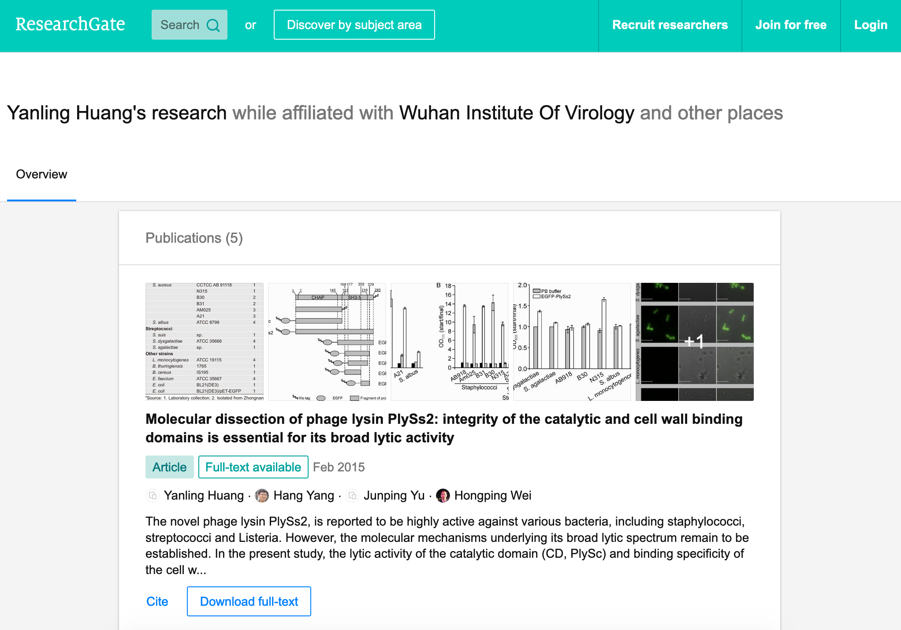
https://www.researchgate.net/scientific-contributions/2035568207_Yanling_Huang (archived)
She is also still listed as a graduate student on the WIV’s Lab of Diagnostic Microbiology webpage:
We are looking for contributors to help us find the domain name for the IP address: 159.226.126.127. It appears to be unregistered. We are confused as to how this web server was found.
Notably, her picture is missing, along two other students:
黄燕玲 2012级硕士研究生 - Huang Yanling 2012 Masters
王孟月 2013级硕士研究生 - Wang Mengyue 2013 Graduate Student
魏翠华 2013级硕士研究生 - Wei Cuihua 2013 Master Degree Student
Almost all of the students on this page have a profile page. Here is Mengyue Wang’s:
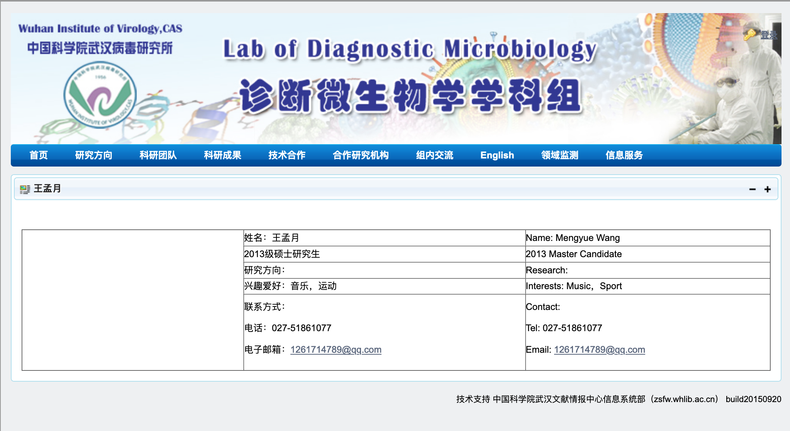
Wei Cuihua also has a profile page.
Who doesn’t?
Zhang Yun (张云2011级硕士研究生) and Huang Yanling (黄燕玲 2012级硕士研究生):
Of 12 researchers listed, Huang Yanling is one of two with no profile picture and an empty profile page.
We are looking for contributors to help find this exchange between Beijing News and the Wuhan Institute of Virology.
A Hong Kong-based reporter for Radio France International wrote:
The rumors of the leaking virus in Wuhan Research Institute are still in progress, and there is news that ’patient zero’ is a researcher (February 17, 2020)
What made the incident even more confusing is that when a reporter from the Continental Beijing News inquired about the rumors about patient No. 0, the institute first denied the researcher Huang Yanling [worked there], but after learning that the person’s name was indeed on the Internet, he Acknowledged that this person had worked in the institute, but now [s]he has left the job and his [her] whereabouts are unknown.
...
The Beijing News asked Shi Zhengli, a researcher specializing in bat coronavirus, and Chen Quanjiao, a researcher in the Influenza Virus Laboratory, both of them said it was unclear whether there was Huang Yanling in the institute. infection. Netizens immediately pointed out that there was a yellow name on the institute’s official website, but the content under the name had been deleted.
Page translated to English via Google Translate. Words in [brackets] were inserted by us.
Source: http://www.rfi.fr/cn/中国/20200217-武汉研究所外泄病毒传言未止又有消息指-零号病人-是研究员 (archived)
To summarize:
Chinese social media claims Huang Yanling is Patient Zero, although no credible evidence currently exists to prove she was performing any research at WIV in 2019.
Huang Yanling hasn’t published any academic papers since 2015 according to ResearchGate.
Her profile picture on the WIV Lab of Diagnostic Microbiology is missing.
Her entire profile is missing from the same website, although another student’s is also missing (Zhang Yun).
WIV released a statement saying that Yanling graduated in 2015, and "After graduation, [s]he has been working and living in other provinces. [She has no] Infection and [is in] good health."
Shi Zhengli (a top scientist at WIV, as we previously covered) and Chen Quanjiao both "said it was unclear whether there was Huang Yanling in the institute."
However, (it is unclear who is speaking here), "after learning that the person’s name was indeed on the Internet, he Acknowledged that this person had worked in the institute, but now [s]he has left the job and his [her] whereabouts are unknown.
What is most interesting about all of these claims is that they could easily be shut down by Huang Yanling’s public appearance. When Shi Zhengli was accused of spreading the virus, she posted on WeChat, "I swear with my life, [the virus] has nothing to do with the lab."
We are looking for contributors who can provide evidence that Huang Yanling posted on WeChat in the middle of February. However, we have not found this message. Additionally, we could not find any recent photos of her that may have been attached to the message.
Why has Huang Yanling not done the same? Surely she is aware of the rumors surrounding her on social media. Even if she was not aware, would it really be impossible for the Chinese government to get in touch with her and have her issue an in-person statement to the media?
It would only be impossible if she was dead.
9.7 Chen Quanjiao’s Weibo Message
We are looking for contributors who can supply Chen Quanjiao’s original Weibo message as well as any news sources corroborating her alleged imprisonment.
WHO confirms experts’ presence at coronavirus epicenter in China (February 18, 2020)
Wuhan, the central Chinese city in Hubei where the outbreak began, is home to the Wuhan Institute of Virology. On Monday, Wang Yanyi, director of the research center, denied allegations that animals used in lab experiments were resold at Huanan Seafood Market, which Chinese authorities have said is ground zero for COVID-19.
The institute had previously denied the outbreak began among lab technicians, including a woman identified as Huang Yanling. Huang was rumored to be "patient zero" on Chinese social media.
Wang’s statement came after messages on Chinese social media claimed the director had been "frequently" reselling lab animals to Huanan market vendors. Chen Quanjiao was the named author of the social media messages, and the posts included photos of Chen, according to NTD Television and other Chinese dissident news services.
Chen is a researcher at the lab. On Tuesday she made a public statement claiming her identity had been stolen. Chen may have been detained, according to Chinese-language news service Sound of Hope.
Social media posts about the institute were scrubbed by Tuesday. Wang Gaofei, chief executive of social media platform Weibo, condemned the posts as "fake news" and said the messages originated from an overseas IP address, according to multiple press reports.
Source: https://www.upi.com/Top_News/World-News/2020/02/18/WHO-confirms-experts-presence-at-coronavirus-epicenter-in-China/8271582041808/ (archived)
Wuhan Institute of Virology researcher refutes rumor about COVID-19 source (February 17, 2020)
Chen Quanjiao, a researcher with the Wuhan Institute of Virology, has refuted an online rumor that claimed the novel coronavirus was leaked from the institute, according to a statement published on its official website on Monday evening. Someone faked her identity, she said.
...
The statement came after a rumor went viral on Chinese social media platform Weibo, saying Chen reported Wang Yanyi, director of the institute, for leaking the virus. Her ID number was included in the fabricated post on Weibo.
...
Chen has been working on influenza viruses at the institute since 2001, according to the official website.
Source: https://news.cgtn.com/news/2020-02-17/Wuhan-based-researcher-refutes-rumor-about-COVID-19-source-OaemKa4hUI/index.html (archived)
Statement by Chen Quanjiao, Wuhan Institute of Virology, Chinese Academy of Sciences (February 17, 2020)
Regarding the so-called whistle-blowing statements published in my name on the Internet today, I solemnly declare:
I have never released any relevant reporting information, and expressed great indignation at the act of using my identity to fabricate the reporting information. I will pursue the legal responsibility of the rumors according to law.
Hereby declare.
Recently, a series of rumors have affected our front-line researchers’ scientific research. Please be careful to prevent related conspiracy and sabotage activities.
Chen Quanjiao, Researcher, Wuhan Institute of Virology, Chinese Academy of Sciences
February 17, 2020
Source: http://www.whiov.ac.cn/tzgg_105342/202002/t20200217_5500447.html (archived)
We urge all journalists worldwide to get in touch with Chen Quanjiao directly, so that she may deny all allegations, ideally via a video call.
9.8 Wuhan Legal Response
As you are likely already aware, China’s response to COVID-19 is unprecedented. Wuhan’s 11 million citizens were placed on strict lockdown in late January, which was only recently lifted. Multiple other major Chinese cities were placed on lockdown as the epidemic spread throughout the country. To date, these actions constitute the largest national quarantine in human history.
We posit that these actions, particularly of local Wuhan officials, accurately align with actions that would be taken following a lab-based outbreak.
Axios provides a timeline of the actions taken by the Chinese Communist Party to handle COVID-19 in the month of January. We will review only some of them; we recommend you read the timeline yourself. All timeline sources are available in the Axios article. Our own comments are marked using brackets [like this].
12/27
Wuhan health officials are told that a new coronavirus is causing the illness.
12/30
Ai Fen, a top director at Wuhan Central Hospital, posts information on WeChat about the new virus. She was reprimanded for doing so and told not to spread information about it.
Wuhan doctor Li Wenliang also shares information on WeChat about the new SARS-like virus. He is called in for questioning shortly afterward.
12/31
China tells the World Health Organization’s China office about the cases of an unknown illness. [4 days after Wuhan officials were told.]
1/1
Wuhan Public Security Bureau brings in for questioning eight doctors who had posted information about the illness on WeChat.
An official at the Hubei Provincial Health Commission orders labs, which had already determined that the novel virus was similar to SARS, to stop testing samples and to destroy existing samples.
1/2
Chinese researchers map the new coronavirus’s complete genetic information. This information is not made public until Jan. 9.
1/7
Xi Jinping becomes involved in the response.
1/9
China announces it has mapped the coronavirus genome.
[The genome itself is not published until 1/11.]
1/11 - 1/17
Important prescheduled CCP meeting held in Wuhan. During that time, the Wuhan Health Commission insists there are no new cases.
1/14
WHO announces Chinese authorities have seen "no clear evidence of human-to-human transmission of the novel coronavirus."
1/18
The Wuhan Health Commission announces four new cases.
Annual Wuhan Lunar New Year banquet. Tens of thousands of people gathered for a potluck.
1/19
Beijing sends epidemiologists to Wuhan.
1/20
Zhong Nanshan, a top Chinese doctor who is helping to coordinate the coronavirus response, announces the virus can be passed between people. [1 day after epidemiologists are sent from Beijing.]
1/23
Wuhan and three other cities are put on lockdown. Right around this time, approximately 5 million people leave the city without being screened for the illness.
1/24
China extends the lockdown to cover 36 million people and starts to rapidly build a new hospital in Wuhan. From this point, very strict measures continue to be implemented around the country for the rest of the epidemic.
Analysis
The timeline tells a month-long story of Wuhan officials attempting to hide the virus from the greater world and, arguably, even the Chinese federal government itself.
Do not take our word for it. The Chinese Communist Party admits the coverup was unjust:
China declared whistleblower doctor Li Wenliang a ’martyr’ following a local campaign to silence him for speaking out about the coronavirus (April 3, 2020)
China on Thursday awarded Li Wenliang, the doctor who sounded an early alarm about the novel coronavirus, the title of "martyr."
In December, police in Wuhan made Li admit to lying about the existence of a worrying new virus discovered in the city. Li died on February 7 after contracting the virus.
An investigation by the Chinese Communist Party found on March 19 that the actions of law enforcement in Wuhan was "irregular" and "improper."
"Martyr" is the highest honor the Communist Party of China can bestow on a citizen killed working to serve the country. The country will honor him with three minutes of silence on Saturday.
Source: https://www.businessinsider.com/coronavirus-china-li-wenliang-whistleblower-doctor-martyr-2020-4 (archived)
If you can read Mandarin, here (archived) is the source announcement from Chinese state media. Here (archived) is a direct interview with Dr. Li Wenliang conducted by the New York Times shortly before his death:
If the officials had disclosed information about the epidemic earlier, I think it would have been a lot better. There should be more openness and transparency.
Dr. Li Wenliang, January 31, 2020
Furthermore, in early February, the Chinese Communist Party officially reprimanded Wuhan officials:
Coronavirus: China purges regional leaders hours after spike in deaths and new cases (February 13, 2020)
The political fallout from the outbreak also escalated on Thursday with the firing of party chief of Hubei province, the party chief of Wuhan and the head of China’s Hong Kong and Macau Affairs office. Ying Yong, the new party chief of Hubei, came up through the ranks in Zhejiang, where the president, Xi Jinping, previously served as party secretary and was also part of anti-corruption campaigns, the president’s signature initiative.
Source: https://www.theguardian.com/world/2020/feb/13/coronavirus-china-purges-regional-leaders-hours-after-spike-in-deaths-and-new-cases (archived)
Curiously, the lab that first shared the genome has also been closed for "rectification", apparently because it shared it without prior authorization:
Chinese laboratory that first shared coronavirus genome with world ordered to close for ‘rectification’, hindering its Covid-19 research (February 28, 2020)
The laboratory at the Shanghai Public Health Clinical Centre was ordered to close for “rectification” on January 12, a day after Professor Zhang Yongzhen’s team published the genome sequence on open platforms. It closed temporarily the following day.
...
“The centre was not given any specific reasons why the laboratory was closed for rectification. [We have submitted] four reports [asking for permission] to reopen but we have not received any replies,” a source with the centre said, requesting anonymity because of the matter’s sensitivity.
...
It was not clear whether the closure was related to the publishing of the sequencing data before the authorities.
...
China’s National Health Commission announced hours after the release by Zhang’s team that it would share the genome sequence with the World Health Organisation. It later emerged that the information had been sent through the officially designated Wuhan Institute of Virology.
Zhang’s team isolated and finished the genome sequence of the then-unknown virus on January 5, two days before China’s official announcement that mysterious pneumonia cases in Wuhan were caused by a hitherto unknown coronavirus.
...
The Shanghai centre reported its discovery to the National Health Commission on the same day and recommended “relevant prevention and control measures” be taken in public places, because the patient from whom the sample was collected had suffered very severe symptoms and the virus resembled a group previously found in bats.
The team made the finding public on January 11 after it saw that the authorities had taken no obvious action to warn the public about the coronavirus.
Source: https://www.scmp.com/news/china/society/article/3052966/chinese-laboratory-first-shared-coronavirus-genome-world-ordered (archived)
To summarize, Wuhan officials:
Censored local medical professionals who attempted to sound the alarm on a new outbreak.
Ordered local labs to destroy samples of the virus.
Withheld the SARS-CoV-2 genome until Xi’s involvement.
Continually insisted on no human-to-human transmission. Experts sent from Beijing confirmed it in one day.
Pretended that everything was normal, still holding a massive 40,000 family banquet despite the clear risk of further transmission.
Containment measures only became widespread after Xi’s involvement. Which leads to the question:
Why were Wuhan officials trying so hard to hide the outbreak? Why did they continue to deny obvious facts until the federal government intervened, and their lies fell apart?
Suppose the outbreak was completely natural and Wuhan officials were not aware of its spillover event. Why would they act so guilty?
Now, suppose Wuhan officials were notified of a lab accident prior to the beginning of the outbreak. Do their actions make more sense, in the context of an employee trying to hide a huge mistake from his or her boss?
Alternative Theory: Puppet Government
One alternative theory has been that the federal government was well aware of the outbreak, and opted to fire Wuhan officials after containment measures failed, to show the people that they were actively responding to the crisis. This is the theory asserted by the Guardian article.
However, given the timeline, we believe China’s actions after Xi’s involvement were a late over-reaction to counteract an initial under-reaction. It is clear that Wuhan officials were banking their jobs on being able to contain the outbreak before it spread elsewhere.
Above all, regardless of whether the federal government was involved in the initial cover-up, the fact there was a cover-up at all hints that powerful government figures were trying to hide uncomfortable truths. Is it not likely that one such truth might be the true nature of the outbreak?
10 Addressing Counter-Claims
Insofar we have only provided evidence in support of our claims. Let us look at some notable arguments against our claims and address them.
10.1 Paper 12
The proximal origin of SARS-CoV-2 (2020)
Our analyses clearly show that SARS-CoV-2 is not a laboratory construct or a purposefully manipulated virus.
...
It is improbable that SARS-CoV-2 emerged through laboratory manipulation of a related SARS-CoV-like coronavirus. As noted above, the RBD of SARS-CoV-2 is optimized for binding to human ACE2 with an efficient solution different from those previously predicted[7,11]. Furthermore, if genetic manipulation had been performed, one of the several reverse-genetic systems available for betacoronaviruses would probably have been used[19]. However, the genetic data irrefutably show that SARS-CoV-2 is not derived from any previously used virus backbone[20].
https://www.nature.com/articles/s41591-020-0820-9 (archive: https://archive.is/59vJY)
To start with, we will once again state that we are not claiming SARS-CoV-2 has been engineered.
That being said, Reference 20 is the paper "Coronavirus reverse genetic systems: infectious clones and replicons" that contains "several reverse-genetic systems available for betacoronaviruses." However, this paper was published in 2014. The WIV’s study (Paper 2) was published one year later, in 2015. From the paper:
A SARS-like cluster of circulating bat coronaviruses shows potential for human emergence (2015)
Using the SARS-CoV reverse genetics system, we generated and characterized a chimeric virus expressing the spike of bat coronavirus SHC014 in a mouse-adapted SARS-CoV backbone.
We are looking for contributors that can help us verify if the 2014 paper "Coronavirus reverse genetic systems: infectious clones and replicons" mentions the "mouse-adapted SARS-CoV backbone" described in the 2015 WIV paper.
While it should be relatively simple to prove whether this "mouse-adapted SARS-CoV backbone" was covered in the 2014 paper, all the WIV would have to do is to simply use a backbone that had not been published previously to invalidate this part of the paper. Indeed, without direct access to the lab it would be impossible to prove what backbones have been used in the past and are currently being used in ongoing studies.
Additionally, this paper does not address the "Infected Animal" theory, which is far more likely to have occured at the WHCDC. Indeed, the paper itself states:
Although the evidence shows that SARS-CoV-2 is not a purposefully manipulated virus, it is currently impossible to prove or disprove the other theories of its origin described here. However, since we observed all notable SARS-CoV-2 features, including the optimized RBD and polybasic cleavage site, in related coronaviruses in nature, we do not believe that any type of laboratory-based scenario is plausible.
While the phrase "laboratory-based scenario" is abstract, given prior context, we will assume this again refers to the "Manipulated Virus" theory. It remains plausible for a lab animal to have been infected with SARS-CoV-2, either prior to arriving at the lab or as part of a spillover event occuring in the lab, afterwards spreading the virus to human Patient Zero. From the layman’s explanation of Paper 1 we remember that:
Multiple coronaviruses can infect the same bat (coinfection)
Coronaviruses like to mix their genes together (recombinate)
If two coronaviruses infect the same bat and recombinate, they can potentially result in a novel (never before recognized) coronavirus
It only takes a few changes ("exchange of a relatively small sequence segment") between two coronaviruses to result in a third coronavirus that can infect other animals ("host-switching")
The odds of this happening are pretty good!
Indeed, wouldn’t it be far more likely for such a recombination event to occur in a laboratory housing many bats in close quarters, such as the WHCDC, rather than anywhere else in Wuhan?
While not directly related to our claim, we would also like to take a moment to point out what we believe to be ethical concerns regarding this paper:
YiSheng BioPharma Announces Research Collaboration With The Scripps Research Institute In Developing New AIDS Vaccine (November 7, 2016)
BEIJING and LA JOLLA, Calif., Nov. 7, 2016 /PRNewswire/ – Yisheng Biopharma Co., Ltd. ("Yisheng Biopharma"), a biopharmaceutical company focusing on research, development, manufacturing, sales and marketing of vaccine products, today announced that it has entered into a collaboration with The Scripps Research Institute ("TSRI") to test a new generation of AIDS vaccine based on novel gp140 trimers and self-assembling nanoparticles designed by TSRI scientists and Toll-Like Receptor 3 (TLR3) agonist adjuvant technology ("PIKA") developed by the company. The cooperative research partnership represents a new opportunity for both organizations to create more effective and safe vaccine products against HIV infection.
https://www.biospace.com/article/releases/yisheng-biopharma-announces-research-collaboration-with-the-scripps-research-institute-in-developing-new-aids-vaccine-/ (archive: https://archive.is/mhvmF)
The Scripps Research Institute and ShangPharma Innovation Announce Translational Research Collaboration (June 8, 2017)
“We are delighted to partner with an experienced group that has complementary infrastructure and resources,” said Peter G. Schultz, Ph.D., President of TSRI and Calibr. “This new initiative allows us to further accelerate our mission of creating new medicines for unmet needs in a nimble partnership structure designed to mature the programs before out-licensing, creating significant value for patients as well as for the institute.”
https://www.scripps.edu/news-and-events/press-room/2017/20170608chempharma.html (archive: https://archive.is/VBvWC)
Scripps Research and Shenzhen Bay Laboratory announce international chemical biology research collaboration (November 27, 2019)
“We are delighted to partner with Shenzhen Bay Laboratory and Peking University to advance our understanding of complex biological systems at the molecular level and address unmet medical needs around the world,” says Peter Schultz, PhD, president and CEO of Scripps Research. “Scripps Research, Shenzhen Bay Laboratory and Peking University share a commitment to scientific excellence and serving the global public health needs.”
https://www.scripps.edu/news-and-events/press-room/2019/20191127-szbl-collaboration.html (archive: https://archive.is/rFswU)
We are looking for more counter-claims to address. If you find one, please contribute it.
As The Scripps Research Institute has multiple partnerships with Chinese biolaboratories, some of which were established as recently as November of last year, it would obviously be in their best financial interest to claim that such an accident did not occur. While we have little reason to doubt their findings were reported with the utmost integrity, we believe these investments should have been declared in the paper as possible conflicts of interest, as these connections cause subconscious bias.
10.2 @trvb Twitter Thread
Trevor Bedford, a scientist at the Fred Hutchinson Cancer Research Center, wrote a thread directly addressing the lab escape theory. We will address snippets here, we recommend you read the full thread on archive.is: https://archive.is/5VE0w
As a foreword, we discourage any personal attacks towards Trevor, as he, and all the other scientists we mention in this document, are doing their jobs to the best of their abilities.
Data point #1 (virus group): #SARSCoV2 is an outgrowth of circulating diversity of SARS-like viruses in bats. A zoonosis is expected to be a random draw from this diversity. A lab escape is highly likely to be a common lab strain, either exactly 2002 SARS or WIV1. 5/21
As proved in Claim 1, WIV has engaged in gain-of-function research resulting in new strains of SARS-CoV-1, for example the synthetic SHC014-CoV. Furthermore, we also proved that the WHCDC housed bats and a researcher from the WHCDC had to quarantine twice due to accidental exposure.
Note that previous non-zoonotic outbreaks have been obvious from genetic data, one example being the 1977 "Russian" flu, which was clearly a 1950s human virus that had been in a freezer for 20 years (https://mbio.asm.org/content/6/4/e01013-15). 6/21
Data point #2 (receptor binding domain): This point is rather technical, please see preprint by @K_G_Andersen, @arambaut, et al at http://virological.org/t/the-proximal-origin-of-sars-cov-2/398 … for full details. 9/21
But, briefly, #SARSCoV2 has 6 mutations to its receptor binding domain that make it good at binding to ACE2 receptors from humans, non-human primates, ferrets, pigs, cats, pangolins (and others), but poor at binding to bat ACE2 receptors. 10/21
This pattern of mutation is most consistent with evolution in an animal intermediate, rather than lab escape. Additionally, the presence of these same 6 mutations in the pangolin virus argues strongly for an animal origin: https://www.biorxiv.org/content/10.1101/2020.02.13.945485v1 … 11/21
It is indeed likely that we would have been able to tell if SARS-CoV-2 was genetically derived from any research the WIV has made public. Of course, we are unaware of any reseach they have not published. This also does not address an infected lab animal scenario. We argue that the virus could have easily originated in an animal in one of these labs.
Data point #3 (market cases): Many early infections in Wuhan were associated with the Huanan Seafood Market. A zoonosis fits with the presence of early cases in a large animal market selling diverse mammals. A lab escape is difficult to square with early market cases. 13/21
As proven in Claim 1, at least several dozen cases had no association with the seafood market at all. Furthermore, what if an infected lab animal had ended up being sold to the market, as Chen Quanjiao’s Weibo Message allegedly claimed?
Data point #4 (environmental samples): 33 out of 585 environmental samples taken from the Huanan seafood market showed as #SARSCoV2 positive. 31 of these were collected from the western zone of the market, where wildlife booths are concentrated. 15/21 http://www.xinhuanet.com/english/2020-01/27/c_138735677.htm
Environmental samples could in general derive from human infections, but I don’t see how you’d get this clustering within the market if these were human derived. 16/21
Again, this assumes that a researcher was Patient Zero, which is one possibility. The possibility of a lab animal infection is not addressed.
11 Miscellaneous Coincidences
The following are notable coincidences that do not directly support Claim 1 or 2. We list them here to address alternative theories and judge their probability of occuring.
11.1 Lijian Zhao vs. Cui Tiankai
On March 12, Lijian Zhao, a spokesperson for the Foreign Ministry of China (as described in his Twitter profile) tweeted the following:
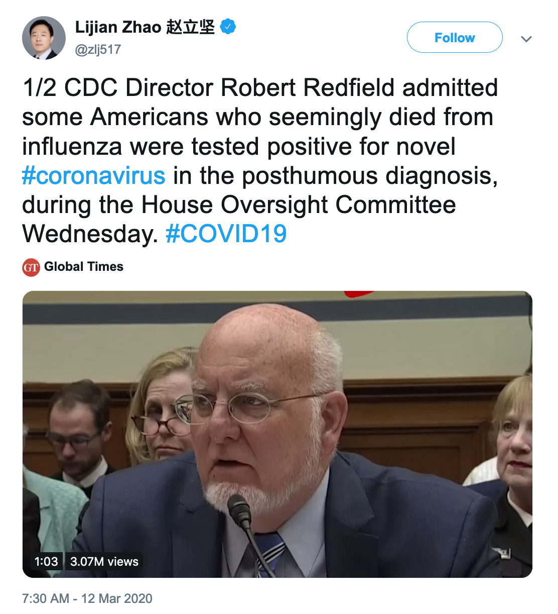
(archived)
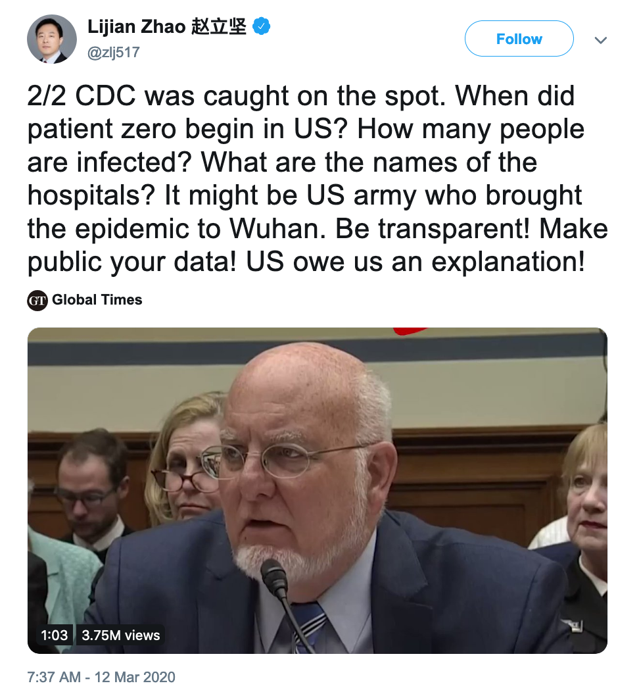
(archived)
His words, "It might be US army who brought the epidemic to Wuhan," can be seen as official CCP approval of the theory that SARS-CoV-2 was introduced to China, perhaps intentionally, by the United States Army.
In late March 2020, China’s ambassador to the United States, Cui Tiankai, disowned the theory on "Axios on HBO":
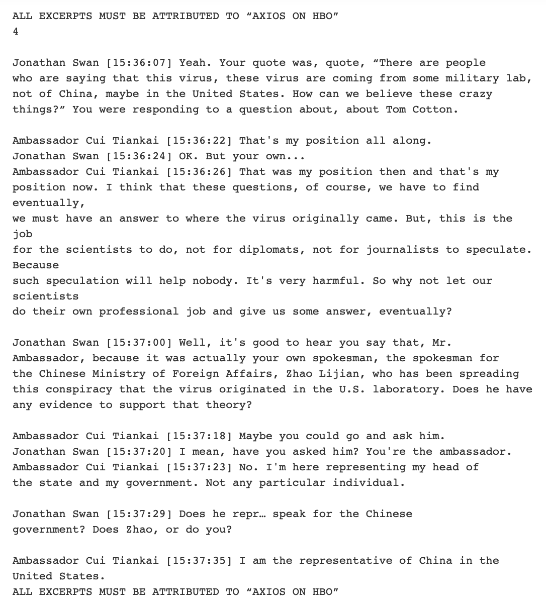
Axios on HBO, pg. 4
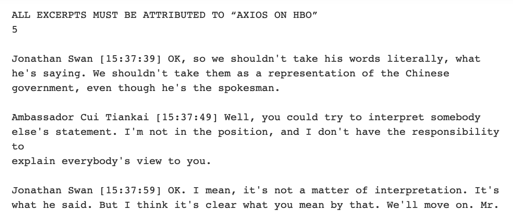
Axios on HBO, pg. 5
https://www.axios.com/china-coronavirus-ambassador-cui-tiankai-1b0404e8-026d-4b7d-8290-98076f95df14.html (archived)
It is unknown whether Lijian Zhao has been reprimanded for his statements. As of today, his tweets have not been deleted.
The only evidence that we have been able to find that supports the U.S. Army theory is Paper 2, which lists the "University of North Carolina at Chapel Hill" as an author.
11.2 Removal of Dr. Xiangguo Qiu and Dr. Keding Cheng From Canada National Microbiology Lab
Canada police probing ’possible policy breaches’ at National Microbiology Lab (July 15, 2019)
“We can confirm that we have received a referral from the Public Health Agency of Canada,” Julie Courchaine, spokeswoman for the Royal Canadian Mounted Police (RCMP), said in a statement. “We will not speculate on the potential outcome of the investigation. In order to maintain the integrity of the investigative process, we have no further comment at this time.”
...
The Public Health Agency of Canada (PHAC) said it advised the RCMP of the “possible policy breaches” in late May. The agency declined to provide any specifics, saying only that it is “looking into an administrative matter” at the lab and “taking steps to resolve it expeditiously.”
...
CBC News on Sunday reported that Xiangguo Qiu, a Chinese-educated doctor who is head of the Vaccine Development and Antiviral Therapies section in the Special Pathogens Program at the lab, was escorted out of the National Microbiology Lab (NML) in Winnipeg earlier this month amid the investigation. Qiu, who was part of a team working out of the NML that developed ZMapp, a vaccine for Ebola used during the 2014 outbreak in West Africa, had also been an adjunct microbiology professor at the University of Manitoba.
...
"There is no employee from the NML under arrest or confined to their home," Eric Morrisette, spokesman for the PHAC, said. "We can assure Canadians that there is no risk to the public and that the work of the NML continues in support of the health and safety of all Canadians."
...
Qiu, who is still listed on the university’s website, could not be reached via multiple attempts for comment.
...
CBC News reported that Qiu’s husband, Keding Cheng, a biologist at the NML, and an unknown number of her students from China were also removed from the lab.
Reuters also could not reach Cheng for comment.
...
The CBC reported that Qiu’s removal came several months after IT specialists at the NML entered her office after hours and replaced her computer.
Source: https://www.reuters.com/article/us-canada-china-researcher/canada-police-probing-possible-policy-breaches-at-national-microbiology-lab-idUSKCN1UA2GU (archived)
This Reuters article references the following CBC News article published July 12, 2019: "RCMP investigate possible policy breach at National Microbiology Lab" (archived).
Later in 2019, CBC News and other sources began to report that the NML had shipped Ebola and Henipah viruses to Beijing:
Questions Surround Canadian Shipment of Deadly Viruses to China (August 9, 2019)
Canada’s National Microbiology Laboratory shipped Ebola and Henipah viruses to Beijing on March 31, raising suspicions from experts in biochemical warfare, who say they think China may use the pathogens to develop offensive biological agents.
The Public Health Agency of Canada (PHAC) and the Royal Canadian Mounted Police (RCMP) report that the incident has not introduced any known risk to public health, according to the Winnipeg Free Press.
The same lab is the focus of an ongoing investigation by the RCMP. The inquiry began following the recent dismissal of the head of the National Microbiology Laboratory’s (NML) Vaccine Development and Antiviral Therapies section in the Special Pathogens Program, virologist Xiangguo Qiu. Qiu, her colleague and husband Keding Cheng, and a number of her international students lost security clearance to their lab on July 5.
In 2018, Govenor General Julie Payette presented Qiu with an innovation award for her helping to lead the development of the Ebola vaccine ZMapp, according to the Winnipeg Free Press. There are no reports as to whether she was involved in the March shipment.
Although health officials insist all protocols were met, anonymous sources report that the shipment lacked an agreement spelling out intellectual property rights, known as a “material transfer agreement,” according to the Winnipeg Free Press. The document would protect Canada’s claim over the viruses, assuming they had been patented through the Budapest Treaty deposit, an internationally recognized system for patenting intentions involving microorganisms.
“If China was leveraging these scientists in Canada to gain access to a potentially valuable pathogen or to elements of a virus without having to license the patent . . . it makes sense with the idea of China trying to gain access to valuable IP without paying for it,” says Leah West, an expert in national security law at the Norman Paterson School of International Affairs, in an interview with CBC News.
Source: https://www.the-scientist.com/news-opinion/questions-surround-canadian-shipment-of-deadly-viruses-to-china-66254 (archived)
Author’s Note: Henipah virus is not related to any coronavirus, however it is a BSL-4 pathogen along with Ebola.
We are looking for contributors who can provide further evidence and sources that can expand on the lack of a Material Transfer Agreement for this shipment, as well as Dr. Qiu’s involvement.
Is it unlikely that the "administrative matter" being looked into involves the lack of a Material Transfer Agreement for this shipment? What could have "IT specialists at the NML" have discovered on Dr. Qiu’s computer?
But even then, Dr. Qiu is just one Chinese scientist out of many in Canada. The odds are extremely unlikely that she would be at all involved with the WIV or WHCDC, right?
Canadian government scientist under investigation trained staff at Level 4 lab in China (October 3, 2019)
A Canadian government scientist at the National Microbiology Lab in Winnipeg made at least five trips to China in 2017-18, including one to train scientists and technicians at China’s newly certified Level 4 lab, which does research with the most deadly pathogens, according to travel documents obtained by CBC News.
...
"This will be third-party funded, and therefore no cost to [the Public Health Agency of Canada]," say the documents, obtained through access to information requests. The identity of the third-party was redacted.
...
During a Sept. 19-30, 2017, trip, she also met with collaborators in Beijing, the documents say, but their names have also been blacked out.
...
The staff member claims RCMP officers have not yet interviewed key people at the lab, because senior management has not made them accessible to police or allowed staff to contact them with relevant information.
...
A spokesperson confirms the police investigation is ongoing. Both agencies have said repeatedly there is no threat to public safety.
...
Qiu and Cheng have not responded to multiple requests for comment.
Source: https://www.cbc.ca/news/canada/manitoba/national-microbiology-lab-scientist-investigation-china-1.5307424 (archived)
As we all know, there is only one BSL-4 lab in China.
This is not the first time this connection has been made, prompting FactCheck.org to ask Canadian officials for a response directly:
Coronavirus Wasn’t Sent by ‘Spy’ From Canada (January 28, 2020)
Suggestions have been circulating on social media that a “Chinese spy team” sent the deadly coronavirus to Wuhan, China — the epicenter of the outbreak — from a Canadian research lab.
...
However, Eric Morrissette, a spokesman for the Public Health Agency of Canada, told us by email, “this is misinformation and there is no factual basis for claims being made on social media.”
...
A third CBC story in August reported that the Winnipeg lab had sent two viruses — Ebola and Henipah — to Beijing on March 31. It didn’t connect Qiu, specifically, to that shipment, but it referred to the investigation, saying, “while the Public Health Agency of Canada says all federal policies were followed, there are questions about whether that shipment is part of an ongoing RCMP investigation.”
...
But Cpl. Caroline Duval, of the Royal Canadian Mounted Police, told us by email, “There is no connection between the outbreak in China and any RCMP investigation.”
...
But, the fact is, Qiu wasn’t “removed” from the Canadian lab “for sending pathogens to the Wuhan facility,” as the tweet says."
Source: https://www.factcheck.org/2020/01/coronavirus-wasnt-sent-by-spy-from-canada/ (archived)
We agree that, based on publicly available information and the interviews FactCheck.org conducted with the PHAC and the RCMP, Dr. Qiu likely was not removed for shipping any coronavirus to the WIV.
However, the NML has specific importance as it was one of the few labs in the world to receive a sample of MERS (Middle East Respiratory Syndrome) coronavirus:
Canada’s national lab has sample of new coronavirus (May 14, 2013)
TORONTO – Canada’s National Microbiology Laboratory in Winnipeg has a sample of the new coronavirus that is causing infections in a number of countries, most notably Saudi Arabia.
Scientific director Dr. Frank Plummer says the lab obtained the virus from the Erasmus Medical Centre in Rotterdam, the Netherlands.
...
Plummer says the coronavirus arrived at the Winnipeg facility on May 4.
...
He says the lab is growing up stocks of the virus and will use it to assess diagnostic tests being used in Canada.
Source: https://www.ctvnews.ca/mobile/health/health-headlines/canada-s-national-lab-has-sample-of-new-coronavirus-1.1281929 (archived)
While there is currently no evidence to support that this sample was shipped to China, either in the same March 2019 shipment or otherwise, these news articles confirm:
The NML received a sample of MERS virus in 2013 and grew "stocks" of it
The NML shipped BSL-4 pathogens to China in March, 2019
There is still an ongoing investigation into Dr. Qiu and her husband over an "administrative matter"
Dr. Qiu specifically trained workers at the BSL-4 lab at the Wuhan Institute of Virology
We ask you, the reader, to use your best judgement to determine if an investigation into a minor clerical or bureacratic error, such as a misplaced form, would take nearly a year to conclude. Consider, especially, that the RCMP and PHAC are aware of the theories surrounding Dr. Qiu, and still have not opted to end the investigation or provide any more details. We believe it is far more likely that this investigation involves matters of national security.
Without more evidence, it is impossible to know what Dr. Qiu is being investigated for, and if she has assisted in the transfer of knowledge or biological material (such as viruses) between the NML and China. The most direct address to this controversy is still the quote from Cpl. Caroline Duval, who wrote to FactCheck.org: “There is no connection between the outbreak in China and any RCMP investigation."
What, then, is the connection between the RCMP investigation and Dr. Qiu?
11.3 Arrest of Dr. Charles Lieber and Two Chinese Nationals
On January 28, the Department of Justice issued the following press release:
Harvard University Professor and Two Chinese Nationals Charged in Three Separate China Related Cases (January 28, 2020)
Dr. Charles Lieber, 60, Chair of the Department of Chemistry and Chemical Biology at Harvard University, was arrested this morning and charged by criminal complaint with one count of making a materially false, fictitious and fraudulent statement. Lieber will appear this afternoon before Magistrate Judge Marianne B. Bowler in federal court in Boston, Massachusetts.
Yanqing Ye, 29, a Chinese national, was charged in an indictment today with one count each of visa fraud, making false statements, acting as an agent of a foreign government and conspiracy. Ye is currently in China.
Zaosong Zheng, 30, a Chinese national, was arrested on Dec. 10, 2019, at Boston’s Logan International Airport and charged by criminal complaint with attempting to smuggle 21 vials of biological research to China. On Jan. 21, 2020, Zheng was indicted on one count of smuggling goods from the United States and one count of making false, fictitious or fraudulent statements. He has been detained since Dec. 30, 2019.
...
Unbeknownst to Harvard University beginning in 2011, Lieber became a “Strategic Scientist” at Wuhan University of Technology (WUT) in China and was a contractual participant in China’s Thousand Talents Plan from in or about 2012 to 2017.
...
Under the terms of Lieber’s three-year Thousand Talents contract, WUT paid Lieber $50,000 USD per month, living expenses of up to 1,000,000 Chinese Yuan (approximately $158,000 USD at the time) and awarded him more than $1.5 million to establish a research lab at WUT.
...
According to court documents, on April 20, 2019, federal officers interviewed Ye at Boston’s Logan International Airport. During the interview, it is alleged that Ye falsely claimed that she had minimal contact with two NUDT professors who were high-ranking PLA officers. However, a search of Ye’s electronic devices demonstrated that at the direction of one NUDT professor, who was a PLA Colonel, Ye had accessed U.S. military websites, researched U.S. military projects and compiled information for the PLA on two U.S. scientists with expertise in robotics and computer science. Furthermore, a review of a WeChat conversation revealed that Ye and the other PLA official from NUDT were collaborating on a research paper about a risk assessment model designed to decipher data for military applications. During the interview, Ye admitted that she held the rank of Lieutenant in the PLA and admitted she was a member of the CCP.
...
In August 2018, Zheng entered the United States on a J-1 visa and conducted cancer-cell research at Beth Israel Deaconess Medical Center in Boston from Sept. 4, 2018, to Dec. 9, 2019. It is alleged that on Dec. 9, 2019, Zheng stole 21 vials of biological research and attempted to smuggle them out of the United States aboard a flight destined for China. Federal officers at Logan Airport discovered the vials hidden in a sock inside one of Zheng’s bags, and not properly packaged. It is alleged that initially, Zheng lied to officers about the contents of his luggage, but later admitted he had stolen the vials from a lab at Beth Israel. Zheng stated that he intended to bring the vials to China to use them to conduct research in his own laboratory and publish the results under his own name.
Source: https://www.justice.gov/opa/pr/harvard-university-professor-and-two-chinese-nationals-charged-three-separate-china-related (archived)
Author’s Note: The lab Dr. Lieber was reportedly paid to build is not the BSL-4 lab at the Wuhan Institute of Virology.
However, consider that this press release was issued 5 days after Wuhan entered lockdown, on the 23rd.
What are the odds this is unrelated?
11.4 Event 201
Statement about nCoV and our pandemic exercise
In October 2019, the Johns Hopkins Center for Health Security hosted a pandemic tabletop exercise called Event 201 with partners, the World Economic Forum and the Bill & Melinda Gates Foundation. Recently, the Center for Health Security has received questions about whether that pandemic exercise predicted the current novel coronavirus outbreak in China. To be clear, the Center for Health Security and partners did not make a prediction during our tabletop exercise. For the scenario, we modeled a fictional coronavirus pandemic, but we explicitly stated that it was not a prediction. Instead, the exercise served to highlight preparedness and response challenges that would likely arise in a very severe pandemic. We are not now predicting that the nCoV-2019 outbreak will kill 65 million people. Although our tabletop exercise included a mock novel coronavirus, the inputs we used for modeling the potential impact of that fictional virus are not similar to nCoV-2019.
http://www.centerforhealthsecurity.org/newsroom/center-news/2020-01-24-Statement-of-Clarification-Event201.html (archived)
We could not find evidence to support the involvement of the Johns Hopkins Center for Health Security, the World Economic Forum, or the Bill & Melinda Gates Foundation in the spreading of SARS-CoV-2, other than Event 201’s relative closeness in time to the first reports of an outbreak.
We would like to say that, if any of these organizations had malicious motives, we likely would not know of Event 201. Only in movies do evil villains explain their plan to the audience before carrying it out. Real life has no plot.
To the best of our knowledge, no measure were taken to hide the existence of Event 201 from the public.
11.5 2019 Military World Games
2019 Military World Games
The 2019 Military World Games, officially known as the 7th CISM Military World Games and commonly known as Wuhan 2019, was held from October 18–27, 2019 in Wuhan, Hubei, China.
https://en.wikipedia.org/wiki/2019_Military_World_Games (archived)
What brought the 2019 World Games to the spotlight was its connection to Event 201 - both began on the same day, October 18, 2019:
About the Event 201 exercise
The next severe pandemic will not only cause great illness and loss of life but could also trigger major cascading economic and societal consequences that could contribute greatly to global impact and suffering. The Event 201 pandemic exercise, conducted on October 18, 2019, vividly demonstrated a number of these important gaps in pandemic preparedness as well as some of the elements of the solutions between the public and private sectors that will be needed to fill them.
https://www.centerforhealthsecurity.org/event201/about (archived)
Again, as previously stated, the only connection to these two events is the date in which they occured. We could not find any other evidence that connect these together. 1 in 365 odds are not unlikely.
What is interesting, however, is the theory that SARS-CoV-2 emerged from an infected soldier at the World Games, as claimed in Lijian Zhao vs. Cui Tiankai. From the Wikipedia article, "This was also the second biggest international sport event to be held in the year 2019 in China after hosting the 2019 FIBA Basketball World Cup." A lot of people, from all around the world, gathering in a relatively small area, could indeed be a genuine source of outbreak.
However, given that there are no known reservoirs of SARS-CoV-1 anywhere else in the world other than China, it is unlikely any international soldier was infected with it before the Military World Games.
We could not find any evidence that shows an infected soldier began the pandemic in Wuhan. It is likely that if China had any such evidence they would have already revealed it by now.
11.6 "HIV Inserts"
Uncanny similarity of unique inserts in the 2019-nCoV spike protein to HIV-1 gp120 and Gag
We are currently witnessing a major epidemic caused by the 2019 novel coronavirus (2019-nCoV). The evolution of 2019-nCoV remains elusive. We found 4 insertions in the spike glycoprotein (S) which are unique to the 2019-nCoV and are not present in other coronaviruses. Importantly, amino acid residues in all the 4 inserts have identity or similarity to those in the HIV-1 gp120 or HIV-1 Gag. Interestingly, despite the inserts being discontinuous on the primary amino acid sequence, 3D-modelling of the 2019-nCoV suggests that they converge to constitute the receptor binding site. The finding of 4 unique inserts in the 2019-nCoV, all of which have identity /similarity to amino acid residues in key structural proteins of HIV-1 is unlikely to be fortuitous in nature. This work provides yet unknown insights on 2019-nCoV and sheds light on the evolution and pathogenicity of this virus with important implications for diagnosis of this virus.
https://www.biorxiv.org/content/10.1101/2020.01.30.927871v1.full.pdf (archived)
This now-withdrawn paper claims that SARS-CoV-2 has "uncanny similarity" to HIV-1, implying that it was engineered or recombinated with it in some way.
It has been widely debunked by other scientists. Such inserts can also be found in bacteria, bacteriophages (viruses that only attack bacteria), and other viruses, including other coronaviruses (directly contradicting the paper). In fact, any six-letter sequence is likely to match against an HIV protein.
At this time we do not believe this paper’s claims have merits.
11.7 Map Manipulation
Some earlier theories pointed out that the location of the Wuhan Institute of Virology had changed on Google Maps following its exposure as a possible outbreak source. The theories concluded that this move was intentionally done to increase its distance from the Huanan Seafood Market, so as to make its proximity seem less suspicious.
In reality, unlicensed mapping activites in China are illegal, and a mandatory algorithm must be applied to randomize the locations of all landmarks (including buildings) in China:
Restrictions on geographic data in China
Due to national security concerns, the use of geographic information in the People’s Republic of China is restricted to entities that obtain a special authorization from the administrative department for surveying and mapping under the State Council.
...
According to articles 7, 26, 40 and 42 of the Surveying and Mapping Law of the People’s Republic of China, private surveying and mapping activities have been illegal in mainland China since 2002. The law prohibits:
"publishing, without authorization, significant geographic information and data concerning the territorial air, land and waters, as well as other sea areas under the jurisdiction of the People’s Republic of China." — The National Administration of Surveying, Mapping and Geoinformation of China, Surveying and Mapping Law of the People’s Republic of China
...
GCJ-02 (colloquially Mars Coordinates, officially Chinese: 地形图非线性保密处理算法; literally: ’Topographic map non-linear confidentiality algorithm’)[15] is a geodetic datum formulated by the Chinese State Bureau of Surveying and Mapping (Chinese: 国测局; pinyin: guó-cè-jú), and based on WGS-84.[16] It uses an obfuscation algorithm[17] which adds apparently random offsets to both the latitude and longitude, with the alleged goal of improving national security.[14][18] There is a license fee associated with using this mandatory algorithm in China.[15]
A marker with GCJ-02 coordinates will be displayed at the correct location on a GCJ-02 map. However, the offsets can result in a 100 - 700 meter error from the actual location if a WGS-84 marker (such as a GPS location) is placed on a GCJ-02 map, or vice versa.
https://en.wikipedia.org/wiki/Restrictions_on_geographic_data_in_China
We therefore conclude that the manipulation of WIV’s location was performed algorithmically, and not intentionally ordered by any individual or group.
12 Conclusion
Up until this point, we have been presenting each of our claims in a vacuum. Let us put them together:
At some point in late 2019, many people who visited the The Huanan Seafood Market fell ill due to a new disease. To date the origin of this disease is unknown.
Conducted ’dangerous’ gain-of-function research on the SARS-CoV-1 virus
Injected live piglets with bat coronaviruses as recently as July 2019: Paper 5, Paper 7, Paper 8
Published a paper on a close descendant of SARS-CoV-1, MERS-CoV, in November 2019
Was hiring researchers to work on bat coronaviruses as recently as November 2019
The United States State Department claimed had ’inadequate safety’
Deleted a press release detailing a U.S. State Department visit
Has not provided concrete evidence that one of their prior researchers is still alive, despite rumors on Chinese social media that they are "Patient Zero", despite one of their other top researchers coming out and swearing the virus had nothing to do with her lab
Had a researcher accuse the director of the Institute of selling infected lab animals to vendors on Weibo (with pictures of herself and her employee ID included); afterwards, she claimed she was ’hacked’
Had staff trained by a Chinese-Canadian scientist at Canada’s only BSL-4 lab who has now been under RCMP investigation for nearly a year following a shipment of Ebola and Henipahvirus from that lab to a lab in China
The market is also less than 3 miles away from the Wuhan Centre for Disease Control, which:
Once kept horseshoe bats, a known reservoir of SARS-CoV-1, within its labs
Had a researcher who quarantined on two separate occasions; once upon coming into contact with bat blood after being ’attacked’ and another time when he was urinated upon in a cave while wearing inadequate personal protection
Had the SARS-CoV-1 virus escape from a lab in Beijing, twice
Compensated families after 27 students were infected with Brucella bacteria during an anatomy course in 2011
Is currently investigating a similar Brucella outbreak amongst "over 100 Students and Staff" in December 2019
Issued bio-safety guidelines to ’fix chronic management loopholes at virus labs’
Censored local medical professionals who attempted to report the outbreak
Withheld the virus’s genome nearly a week after they sequenced it
Launched the largest national quarantine in human history once containment failed
Allowed a Party spokesperson to accuse the United States Army of intentionally bringing SARS-CoV-2 to Wuhan
Back to the market: the The Huanan Seafood Market didn’t even have bats for sale, and most bats species in Wuhan would be hibernating at the time of outbreak. It was reported that 34% of cases had no contact with the market, and ’No epidemiological link was found between the first patient and later cases’.
If an infected animal was indeed the culprit, why did it fail to infect a single person outside of the market? It could not have been infected at the market, because there were no bats that could serve as sources of infection. So, where were all the infected people outside of Wuhan by the time SARS-CoV-2 started spreading in the market?
We hope that this document adequately addressed each claim with what evidence is available and fulfilled its secondary responsibility of educating you on biolaboratory safety. By now, we hope you understand that these claims are not impossible; they are in fact more than likely.
We may never be certain of the truth. What we are certain of, however, is that these claims shouldn’t be discounted, and far more research must be done to disprove either one.
Our work as a global community must continue.
13 References
The following are academic papers or sources cited throughout this document. All cited papers have passed the peer review process and all cited sources come from prestigious medical or scientific journals.
Please note that many other sources are cited in this document, including Wikipedia, The New York Times, Wall Street Journal, Southern China Morning Post, the U.S. Center for Disease Control, the World Health Organization, and others. These sources are used when the claim being proven is trivial (i.e. defining GCJ-02 through Wikipedia) or when other sources could not be found (i.e. State Department Cables). Whenever possible, we prefer an academic or prestigious source over a news report. If you believe you have important sources that can help us with our mission, please visit our Contribution Policy.
Bibliography
| [1] | “A Novel Coronavirus from Patients with Pneumonia in China, 2019.” January 24, 2020. https://www.nejm.org/doi/10.1056/NEJMoa2001017 | |
| [2] | “Clinical features of patients infected with 2019 novel coronavirus in Wuhan, China.” January 24, 2020. https://www.thelancet.com/journals/lancet/article/PIIS0140-6736(20)30183-5/fulltext | |
| [3] | “Inside the Chinese lab poised to study world’s most dangerous pathogens.” February 22, 2017. https://www.nature.com/news/inside-the-chinese-lab-poised-to-study-world-s-most-dangerous-pathogens-1.21487 | |
| [4] | “Difference in Receptor Usage between Severe Acute Respiratory Syndrome (SARS) Coronavirus and SARS-Like Coronavirus of Bat Origin.” 2007. https://www.ncbi.nlm.nih.gov/pmc/articles/PMC2258702/ | |
| [5] | “Engineered bat virus stirs debate over risky research.” November 12, 2015. https://www.nature.com/news/engineered-bat-virus-stirs-debate-over-risky-research-1.18787 | |
| [6] | “Comparative genetic analysis of the novel coronavirus (2019-nCoV/SARS-CoV-2) receptor ACE2 in different populations.” February 24, 2020. https://www.nature.com/articles/s41421-020-0147-1 | |
| [7] | “Discovery of a rich gene pool of bat SARS-related coronaviruses provides new insights into the origin of SARS coronavirus.” November 30, 2017. https://www.ncbi.nlm.nih.gov/pmc/articles/PMC5708621/ | |
| [8] | “A pneumonia outbreak associated with a new coronavirus of probable bat origin.” February 3, 2020. https://www.ncbi.nlm.nih.gov/pmc/articles/PMC7095418/ | |
| [9] | “Fatal swine acute diarrhoea syndrome caused by an HKU2-related coronavirus of bat origin.” April 4, 2018. https://www.ncbi.nlm.nih.gov/pmc/articles/PMC7094983/ | |
| [10] | “Evaluation of MICRO-CHEM PLUS as a Disinfectant for Biosafety Level 4 Laboratory in China.” March 5, 2018. https://journals.sagepub.com/doi/full/10.1177/1535676018758891 | |
| [11] | “The N-Terminal Domain of Spike Protein Is Not the Enteric Tropism Determinant for Transmissible Gastroenteritis Virus in Piglets.” March 30, 2019. https://www.ncbi.nlm.nih.gov/pmc/articles/PMC6520731/ | |
| [12] | “A conserved region of nonstructural protein 1 from alphacoronaviruses inhibits host gene expression and is critical for viral virulence.” July 26, 2019. https://www.ncbi.nlm.nih.gov/pmc/articles/PMC6746460 | |
| [13] | “Molecular mechanism for antibody-dependent enhancement of coronavirus entry.” November 27, 2019. https://jvi.asm.org/content/94/5/e02015-19 | |
| [14] | “How China’s ’Bat Woman’ Hunted Down Viruses from SARS to the New Coronavirus.” March 11, 2020. https://www.scientificamerican.com/article/how-chinas-bat-woman-hunted-down-viruses-from-sars-to-the-new-coronavirus1/ | |
| [15] | “Genomic characterisation and epidemiology of 2019 novel coronavirus: implications for virus origins and receptor binding.” January 30, 2020. https://www.thelancet.com/journals/lancet/article/PIIS0140-6736(20)30251-8/fulltext | |
| [16] | “SARS escaped Beijing lab twice.” April 25, 2004. https://www.the-scientist.com/news-analysis/sars-escaped-beijing-lab-twice-50137 | |
| [17] | “Chinese University Fires Administrators, Offers Compensation After Lab Accident.” September 13, 2011. https://www.sciencemag.org/news/2011/09/chinese-university-fires-administrators-offers-compensation-after-lab-accident | |
| [18] | “Chinese institutes investigate pathogen outbreaks in lab workers.” December 17, 2019. https://www.nature.com/articles/d41586-019-03863-z | |
| [19] | “Rethinking Biosafety in Research on Potential Pandemic Pathogens.” 2012. https://www.ncbi.nlm.nih.gov/pmc/articles/PMC3484391/ | |
| [20] | “Rethinking Biosafety in Research on Potential Pandemic Pathogens.” 2012. https://www.ncbi.nlm.nih.gov/pmc/articles/PMC3484391/ | |
| [21] | “Containing the accidental laboratory escape of potential pandemic influenza viruses.” 2013. https://bmcmedicine.biomedcentral.com/articles/10.1186/1741-7015-11-252 | |
| [22] | “Questions Surround Canadian Shipment of Deadly Viruses to China.” August 9, 2019. https://www.the-scientist.com/news-opinion/questions-surround-canadian-shipment-of-deadly-viruses-to-china-66254 |